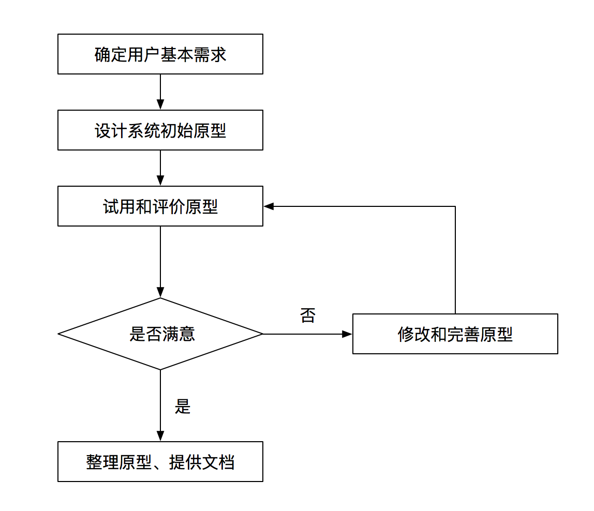

一、信息化和信息系统
A.信息系统与信息化
1.香农指出，信息就是能够用来消除不确定性的东西（即不是物质也不是能量）
2.信息的传输模型：
- 1）信源：产生信息的实体
- 2）信宿：信息的归宿或接收者
- 3）信道：传送信息的通道
- 4）编码器
- 5）译码器
- 6）噪声：可以理解为干扰
3.信息系统
- 1）信息系统就是输入数据，通过加工处理，产生信息的系统
- 2）以计算机为基础的信息系统可以定义为：结合管理理论和方法，应用信息技术解决管理问题，提高生产效率，为生产或信息化过程以及管理和决策提供支撑的系统
- 3）组成部件包括硬件、软件、数据库、网络、存储设备、感知设备、外设、人员以及把数据处理成信息的规程等
4.信息化五个层次：
- 1）产品信息化
- 2）企业信息化
- 3）产业信息化
- 4）国民经济信息化
- 5）社会生活信息化
5.四库两网一站十二金：
- 四库：人口、法人单位、空间地理和自然资源、宏观经济四个基础数据库
- 两网：政务内网和外网
- 一站：政府门户网站
- 十二金：金宏、金税、金关、金财、金融监管（含金卡）、金审、金盾、金保、金家、金水、金质
6.国家信息化体系（技资网产人政）：
- 1）信息资源：是国家信息化的核心任务，是取得实效的关键，也是国家信息化的薄弱环节
- 2）信息网络：是信息资源开发和利用的基础设施
- 3）信息技术应用：是信息化体系中的龙头，主国家信息化建设的主阵地，集中体现了国家信息化建设的需求和效益
- 4）信息技术和产业：是信息化的物质基础
- 5）信息化人才：是信息化的成本之本，合理的人才结构更是信息化人才的核心和关键
- 6）信息化政策法规和标准规范：是国家信息化快速、有序、健康和持续发展的保障
7.信息系统生命周期
- 1）系统规划阶段：可行性分析、开发计划
- 2）系统分析阶段：需求分析
- 3）系统设计阶段：概要设计、详细设计
- 4）系统实施阶段：编码、测试
- 5）系统运行和维护阶段
B.信息系统开发方法
1.结构化方法
- 1）结构化分析（Structured Analysis,SA）、结构化设计（Stucctured Design,SD）和结构化程序设计（Structured Programming,SP），精髓是自顶向下、逐步求精和模块化设计
- 2）结构化方法的特点：
- “用户第一”
- 开发工作阶段化
- 开发文档规范化
- 从整体和全局考虑
- 3）适合于数据处理领域的问题，但不适应于规模较大、比较复杂的系统开发，局限性有：
- 开发周期长：直到系统实施阶段结束后，用户才能使用系统
- 难以适应需求变化 ：要求分析师在系统分析阶段充分掌握和理解用户需求
- 很少考虑数据结构：注重系统功能的分解与抽象，兼顾数据结构方面不多；从SA阶段的数据图到SD阶段的模块结构图的转变也比较困难
2.面向对象方法
- 1）具有更好的复用性，其关键在于建立一个全面、合理、统一的模型
- 2）系统分析、系统设计和系统实现之间的界限变得不明确
- 3）名词
- 对象：描述客观对象的一个实体
- 属性：对象的静态特征
- 操作：方法或服务，规定对象的行为
- 类：相同属性、相同操作的对象的集合；创建对象的模板
- 实例：类中的每个对象
3.原型化方法
- 1）根据用户初步需求，快速地建立一个系统模型展示给用户，在此基础上与用户交流，最终实现用户需求的信息系统快速开发的方法
- 2）原型，获得一组基本需求说明后，通过快速分析构造出一个小型的系统，使得用户可以在试用原型系统的过程中得到亲身感受和受到启发，然后开发者根据用户的意见对原型加以改进
- 3）按是否实现功能来分：
- 水平原型（行为原型）：细化需求，功能的导航
- 垂直原型（结构化原型）：主要用在复杂的算法实现上
- 4）按最终结果分：
- 抛弃式原型（探索式原型）：达到预期目的后，原型本身被抛弃；主要用在解决需求不确定性、二义性、不完整性、含糊性等
- 演化式原型：为开发增量式产品提供基础，逐步将原型演化成最终系统；主要用在必须易于升级和优化的场合，特别适用于Web项目
- 5）原型法的开发过程

- 6）原型法的特点：
- 用户参与的程度大大提高，开发的系统符合用户的需求
- 开发的环境要求高
- 管理水平要求高
- 原型法适用于那些需求不明确的系统开发
4.面向服务的方法：关注企业业务、直接映射、微服务
C.常规系统集成技术
1.系统集成是指将计算机软件、硬件、网络通信等技术和产品集成为能够满足用户特定需求的信息系统，包括总体策划、设计开发、实施、服务及保障
2.网络标准与网络协议
- 1）OSI协议（物数网传会表应）
- 物理层：包括物理连网媒介
- 数据链路层：传输帧
- 网络层：将数据从发送方路由到接收方
- 传输层：端到端
- 会话层：管理功能
- 表示层：格式化、解密加密
- 应用层
- 2）对应TCP/IP：
- 网络接口层=物理层+数据链路层
- 网络层=网络层
- 传输层=传输层
- 应用层=会话层+表示层+应用层
- 3）网络协议和标准
- 802.3：以太网的CSMA/CD载波监听多路访问/冲突检测协议
- 802.11：无线局域网WLAN标准协议
- IEEE 802.3，标准以太网，10Mb/s，传输介质为细同轴电缆
- IEEE 802.3u，快速以太网，100Mb/s，双绞线
- IEEE 802.3z，千兆以太网，1000Mb/s，光纤或双绞线
- 4）TCP/IP
- a）应用层协议
- FTP（File Transport Protocol，文件传输协议）建立在TCP
- TFTP（Trivial File Transfer Protocol，简单文件传输协议）建立在UDP
- HTTP（Hypertext Transfer Protocol，超文本传输协议）建立在TCP
- SMTP（Simple Mail Transfer Protocol，简单邮件传输协议）建立在TCP
- DHCP（Dynamic Host Configuration Protocol，动态主机配置协议）建立在UDP，管理IP，固定、动态、自动分配
- Telnet（远程登录协议）建立在TCP
- DNS（Domain Name System，域名系统）
- SNMP（Simple Network Management Protocol，简单网络管理协议）路由管理
- b）传输层协议
- TCP：可靠、面向连接、全双工
- UDP：无连接、速率
- c）网络层协议
- IP：端到端的分组分发
- ARP：动态地完成IP地址向物理地址（MAC）的转换；RARP用于动态完成物理地址向IP地址的转换
- ICMP：发送差错报文
- IGMP：允许Internet中的计算机参加多播，是计算机用做向相邻多目路由器报告多目组成员的协议
3.网络设备
- 中继器，物理层，对接收信号进行再生和发送，只起到扩展传输距离用，对高层协议是透明的，但使用个数有限（例如，以太网中只能使用4个）
- 网桥，数据链路层，根据帧物理地址进行网络之间的信息转发，可缓解网络通信繁忙度，提高效率。只能够连接相同MAC层的网络
- 路由器，网络层，通过逻辑地址进行网络之间的信息转发，可完成异构网络之间的互联互通，只能连接使用相同网络层协议的子网
- 网关，高层（第4-7层），最复杂的网络互联设备，用于连接网络层以上执行不同协议的子网
- 集线器，物理层，多端口中继器
- 二层交换机，数据链路层，是指传统意义上的交换机，多端网口等
- 三层交换机，网络层，带路由功能的二层交换机
- 多层交换机，高层（第4-7层），带协议转换的交换机
4.网络存储技术
- 1）直接附加存储DAS（Direct Attached Storage）：通过电缆直接连到服务器，当存储容量增加时会有瓶颈
- 2）网络附加存储NAS（Network Attached Storage）：专用的文件服务器，以数据为中心，将存储设备与服务器分离，采用RAID保护数据，即插即用，简单，成本低，不安全，占用LAN带宽
- 3）存储区域网络SAN（Storage Area Network）：通过专用宽带网将一个或多个网络存储设备和服务器连接起来的专用存储系统，将存储设备从传统以太网中分离了出来
- FC SAN
- IP SAN：iSCSI（Internet SCSI），既具备了IP网络配置和管理简单的优势，又提供了SAN架构所拥有的强大功能和扩展性
- IB SAN
- 4）备份：完全备份、差分备份、增量备份
5.网络接入技术
- 1）电话线：PSTN接入、ISDN接入
- 2）ADSL接入：时分利用，非对称数字用户线路，提供8Mb/s的下午速率和1.5Mb/s的上行速率，G.Lite最大下行速率为1.5Mb/s，最大上行速率为512Kb/s
- 3）FTTx+LAN接入：光纤+局域网，FTTC光纤到路边、FTTZ光纤到小区、FTTB光纤到楼、FTTF光纤到楼层、FTTH光纤到户
- 4）HFC接入：光纤同轴电缆，将光缆敷设到小区，然后通过光电转换节点，利用有线电视 （CATV）的总线式同轴电缆连接到用户，充分利用CATV原的网络，建网快、造价低
- 5）无线接入：WiFI和4G，WiFi802.11,a,b,g,n,ag，4G-20MB、100MB，WimAX-50KM、70MB
6.网络规划与设计
- 1）网络规划
- 需求分析
- 可行性分析：技术、经济、操作
- 对现有网络的分析与描述，对现有网络系统进行调研
- 2）网络设计
- 接入层：面向用户连接或访问网络的部分，允许终端用户连接到网络
- 汇聚层：核心层和接入层的分界面，完成网络访问策略控制、数据包处理、过滤、寻址，以及其他数据处理的任务，更高的性能，更高的交换效率
- 核心层：网络主干部分，目的在于通过高速转发通信，提供优化、可选的骨干传输结构，更高的可靠性，性能和吞吐量
- 网络设计工作：网络拓扑结构设计，地理环境、传输介质、传输可靠性；主干网络（核心层）设计，网络规模大小、网上传输信息的种类、可投入资金；汇聚层和接入层设计；广域网连接与远程访问设计，网络规模大小、网络用户数量；无线网络设计；网络安全设计；设备选型
7.扩展-综合布线
- 工作区子系统
- 水平间子系统
- 管理子系统
- 垂直干线子系统
- 设备间子系统
- 建筑群子系统
8.数据仓库技术
- 1）一些概念
- ETL（Extract/Transformation/Load）：清洗、转换、加载
- 元数据：有关数据源定义目标定义，转换规则等相关的关键数据，包括数据仓库表的结构、数据仓库表的属性
- 粒度：保存数据的细化或综合程度的级别
- 分割：结构相同的数据被分成多个数据物理单元
- 数据集市：小型的，面向部门或工作组级数据仓库
- ODS（Operation Data Source，操作数据存储）
- 2）数据仓库是一个面向主题的、集成的、非易失的、且随时间变化的数据集合

- 数据源：是数据仓库系统的基础
- 数据的存储与管理：是整个数据仓库系统的核心
- OLAP服务器：对分析需要的数据进行有效集成，按多维模型予以组织，以便进行多角度、多层次的分析，并发现趋势
- 前端工具：主要包括各种查询工具、报表工具、分析工具、数据挖掘工具以及各种基于数据仓库或数据集市的应用开发工具
9.中间件技术
- 中间件是一种独立的系统软件或服务程序 ，分布式应用软件借助这种软件在不同的技术之间共享资源，中间件位于客户机服务器的操作系统之上，管理计算资源和网络通信
- 底层型中间件：JVM、CLR、JDBC、ODBC
- 通用型中间件：J2EE、COM
- 集成型中间件：WebLogic、WebSphere
D.软件工程
1.需求分析
- 1）软件需求是指用户对新系统在功能、行为、性能、设计约束等方面的期望；要满足合同、标准、规范或其他正式规定文档所需具备的条件或能力
- 2）需求的层次
- a）业务需求（为什么）：企业或客户对系统高层次的目标要求
- b）用户需求（必须要完成）：用户的具体目标，用户要求系统必须能完成的任务，描述了用户能使用系统来做些什么
- c）系统需求：从系统的角度来说明软件的需求
- 功能需求（行为需求），必须在系统中实现的软件功能
- 非功能需求：系统必须具备的属性或品质（可维护性、效率等）
- 设计约束：限制条件或补充规约
- 3）需求获取（需求开发）：常见的需求获取方法包括用户访谈、问卷调查、采样、情节串联板、联合需求计划等
- 4）需求分析（发现冲突、发现约束边界、描述需求）
- 数据流图（DFT）表示功能模型，各个部件的功能
- 状态转换图（STD）表示行为模型
- 5）软件需求规格说明书（SRS）是需求开发活动的产物，是整个开发工作的基础
- 6）需求验证：通过需求评审和需求测试
- 7）UML
- a）可视化建模语言，面向对象的一种标准表示，允许任何一种过程和方法使用它，简单可扩展，强调重用
- b）构造块，分别是事物（thing）、关系（relationship）、图（diagram）
- c）关系
- 依赖（dependency）一个事物发生变化会影响另一个事物的语义
- 关联（association）语义上的联系
- 泛化（generalization）继承的反关系
- 实现（realization）一个类指定了由另一个类保证执行的契约
- d）图
- 类图（class diagram）静态设计视图
- 对象图（object diagram）系统的静态设计视图或静态进程图
- 构件图（component diagram）表示系统的静态设计实现图
- 组合结构图（composite structure diagram）画出结构化类的内部内容，行为
- 用例图（use case diagram）描述一组用例、参与者及它们之间的关系，给出系统的静态使用视图，描述需求
- 顺序图（sequence diagram，也称序列图）交互图，行为，强调消息的时间次序
- 通信图（communication diagram）交互图，行为
- 定时图（timing diagram，也称计时图），交互图，行为
- 状态图（state diagram）状态图描述一个状态机，它由状态、转移、事件和活动组成；强调事件导致的对象行为，这非常有助于对反应式系统建模，行为
- 活动图（activity diagram）动态视图
- 行为部署图（deployment diagram）描述对运行时的处理节点及在其中我现在的构件的配置，实现图
- 制品图（artifact diagram）
- 包图（package diagram）静态
- 交互概览图（interaction overview diagram）
- 8）面向对象分析
- a）用例模型
- 识别参与者
- 合并需求获得用例
- 细化用例描述：包含关系（include）、扩展关系（extend）、泛化关系
- b）分析模型
- 关联关系
- 依赖关系
- 泛化关系
- 共享聚集
- 组合聚集
- 实现关系

2.软件架构设计：场景视图、逻辑视图、开发视图、处理视图、物理视图
3.软件设计
- 1）信息隐藏性与模块独立性
- 2）结构化设计（SD）：高内聚、低耦合
- 3）面向对象设计
- 单一职责原则：设计功能单一的类
- 开放-封装原则：对扩展开放，对修改封闭
- 李氏（Liskov）替换原则：子类可以替换父类
- 依赖倒置原则：要依赖于抽象，而不是具体实现；针对接口编程，不要针对实现编程
- 接口隔离原则：使用多个专门的接口比使用单一的总接口要好
- 组合重用原则：要尽量使用组合，而不是继承关系达到重用目的
- 迪米特（Demeter）原则（最少知识法则）：一个对象应当对其他对象有尽可能少的了解。本原则与结构化方法的低耦合原则是一致的
- 4）设计模式：特定环境下遇到特定类型的问题，采用他人已使用过的一些成功的解决方案
4.软件工程的过程管理
- 1）能力成熟度模型集成（CMMI）
- 初始级
- 可管理级
- 已定义级
- 量化管理级
- 优化管理级
5.软件测试及其管理
- 1）软件测试的目的是验证软件是否满足软件开发合同或项目开发计划、系统/子系统设计文档、SRS、软件设计说明和软件产品说明等规定的软件质量要求
- 2）原则：迟早不断；避免测试自己的；选择合理有效以及不合理无效的数据；回归；尚发现与已发现的成正比；
- 3）测试方法
- a）静态测试是批被测试程序 不在机器上运行，而采用人工检测和计算机辅助静态分析的手段对程序进行检测，包括桌前检查（自查）、代码走查（小组+专家）、代码审查（小组）
- b）动态测试是指在计算机上实际运行程序进行软件测试
- 白盒测试也称为结构测试，主要用于软件单元测试中。主要思想是将程序看作一个透明的白盒，测试人员完全清楚程序的结构和处理算法，按照程序内部逻辑结构设计测试用例，检测程序中的主要执行通路是否都能按预定要求正确工作
- 黑盒测试也被称为功能测试，主要用于集成测试、确认测试和系统测试中。将程序看作是一个不透明的黑盒，完全不考虑（或不了解）程序的内部结构 和处理算法
- 4）测试的类型
- a）单元测试
- 也称为模块测试，最小单位，程序员
- 目的是检查每个模块能否正确地实现设计说明中的功能、性能、接口和其他设计约束等条件，发现模块内可能存在的各种差错
- b）集成测试：组装、联合
- c）确认测试：有效性测试、根据用户的参与程度
- 内部确认测试，开发组织内部
- Alpha测试和Beta测试，Alpha测试是指由用户在开发环境下测试，Beta测试是指由用户在实际使用环境下进行测试
- 验收测试：针对SRS，在交付前以用户为主进行的测试
- d）系统测试
- e）配置项测试
- f）回归测试：目的是测试软件变更之后，变更部分的正确性和对变更需求的符合性，以及软件原有的、正确的功能、性能和其他规定的要求的不损害性
6.软件集成技术：界平数应过
- 表示集成（界面集成）
- 数据集成
- 控制集成（功能或应用集成）
- 业务流程集成（过程集成）
- 企业之间的应用集成（平台集成）
E.新一代信息技术
1.物联网
- 1）物联网（The Internet of Things）是指通过信息传感设备，按约定的协议，将任何物品与互联网相连接，进行信息交换和通信
- 2）物联网主要解决物品与物品（Thing to Thing,T2T）、人与物品（Human to Thing,H2T）、人与人（Human to Human,H2H）之间的互连
- 3）M2M的概念，可以解释为人与人（Man to Man），或机器与机器 （Maching to Machine）。在物联网应用中有两项关键技术，分别是传感器技术和嵌入式技术
- 4）RFID（Radio Frequency Identification，射频识别）是物联网中使用的一种传感器技术，可通过无线电信号识别特定目标并读写相关数据，而无需识别系统与特定目标之间建立机械或光学接触
- 5）物联网架构可分为三层，分别是：
- 感知层，由各种传感器构成，包括温湿度传感器、二维码标签、RFID标签和读写器、摄像头、GPS等感知终端。是物联网识别物体、采集信息的来源
- 网络层，由各种网络，包括互联网、广电网、网络管理系统和云计算平台等组成，是整个物联网的中枢
- 应用层，是物联网和用户的接口，它与行业需求结合，实现物联网的智能应用
- 6）智慧城市功能层包括：
- 物联感知层：各种信息采集设备、各类传感器、监控摄像机、GPS终端等实现
- 通信网络层
- 计算与存储层
- 数据及服务支撑层
- 智慧应用层：各种基于行业或领域的智慧应用及应用整合
2.云计算
- 1）云计算（Cloud Computing），是一种基于互联网的计算方式，通过这种方式，在网络上配置为共享的软件资源、计算资源、存储资源和信息资源可以按需求提供给网上终端设备和终端用户
- 2）云计算服务的类型：
- IaaS（基础设施即服务），向用户提供计算机能力、存储空间等基础设施方面的服务
- PaaS（平台即服务），向用户提供虚拟的操作系统、数据库管理系统、Web应用等平台化的服务
- SaaS（软件即服务），向用户提供应用软件、组件 、工作流等虚拟化软件的服务
3.大数据
- 1）大数据（big data），指无法在一定时间范围内用常规软件工具进行捕捉、管理和处理的数据集合，是需要新处理模式才能具有更加的决策力、洞察发现力和流程优化能力的海量、高增长率和多样化的信息资产
- 2）大数据业务通常用5个V——Volume（大量）、Variety（多样）、Value（价值）、Velocity（高速）和Veracity（真实性）来概括大数据的特征
F.信息系统安全技术
1.信息安全概念
- 1）主要包括：
- 私密性：信息不被未授权者知晓的属性
- 完整性：信息是正确的、真实的、未被篡改的、完整无缺的属性
- 可用性：信息可以随时正常使用的属性
- 2）信息系统安全四个层次：
- 设备安全
- 数据安全
- 内容安全：在政治、法律、道德层次上的要求
- 行为安全：动态安全
- 3）信息安全等级保护（自主、审计、标记、结构化、验证）
- 用户自主保护级：第一级，信息系统受到破坏后，对公民、法人和其他组织的合法权益造成损害 ，但不损害国家安全、社会秩序和公共利益
- 系统审计保护级：第二级，信息系统受到破坏后，会对公民、法人和其他组织的合法权益产生严重损害，或者对社会秩序和公共利益造成损害 ，但不损害国家安全
- 安全标记保护级：第三级，信息系统受到破坏后，会对社会秩序和公司利益造成严重损害，或者对国家安全造成损害
- 结构化保护级：第四级，信息系统受到破坏后，会对社会秩序和公共利益造成特别严重损害 ，或者对国家安全造成严重损害
- 访问验证保护级：第五级，信息系统受到破坏后，会对国家安全造成特别严重损害
2.信息加密
- 1）对称加密技术：特点是文件加密和解密使用相同的密钥，DES（56位）、IDEA（128位）、AES
- 2）非对称加密技术：公开密钥与私有密钥，基于大合数因子分解困难性的公开密钥解码，RSA（速度慢）
- 3）Hash（散列）函数：可提供保密性、报文认证以及数字签名功能
- 4）数字签名（单向）
- 不能抵赖
- 不能伪造签名
- 利用RSA密码可以同时实现数字签名和数据加密
- 5）认证（Authentication）又称鉴别、确认，有口令、标识符、密钥、信物、智能卡、指纹、视网纹等
3.信息系统安全
- 1）计算机系统安全
- 2）网络安全
- 防火墙（软、硬）：主要是实现网络安全的安全策略
- 入侵检测与防护：入侵检测系统（IDS）主动报警；入侵防护系统（IPS）提供主动防护（处理、串接）
- VPN：虚拟专用网络，依靠ISP（Internet服务提供商）和其他NSP（网络服务提供商），在公用网络中建立专用的、安全的数据通信通道的技术；包括：点对点隧道协议（Point-to Point Tunneling Protocol,PPTP）、第2层隧道协议（Layer2 Tunneling Protocol,L2TP）和IP安全协议（IPSec）
- 网络蜜罐技术：蜜罐（Honeypot）技术是一种主动防御技术，“诱捕”攻击者的陷阱
G.信息化发展与应用
1.“十三五”规划培育人工智能、移动智能终端、第五代移动通信（5G）、先进传感器作为新一代信息技术产业创新重点发展
2.信息技术发展趋势和新技术应用主要包括：
- 1）高速度大容量
- 2）集成化和平台化
- 3）智能化
- 4）虚拟计算
- 5）通信技术
- 6）遥感和传感技术
- 7）移动智能终端
- 8）以人为本
- 9）信息安全
3.电子政务
- 1）电子政务是政府机构应用现代信息和通信技术，在网络上实现政府组织结构和工作流程的优化重组，超越时间、空间与部门分隔的限制 ，提供优质、规范、透明、符合国际水准的管理和服务
- 2）建设原则：
- 统一规划
- 需求主导
- 整合资源
- 统一标准
- 3）应用模式
- 政府对政府（G2G）
- 政府对企业（G2B）
- 政府对公众（G2C）
- 政府对公务员（G2E）
4.电子商务
- 1）电子商务（Electronic Commerce,EC）是利用计算机技术、网络技术和远程通信技术，实现整个商务过程的电子化、数字化和网络化。涉及到买家、卖家、银行或金融机构、政府机构、认证机构（CA）、配送中心等机构
- 2）电商的类型：
- B2B，企业和企业
- B2C，企业和消费者个人
- C2C，消费者和消费者
- O2O，线上购买线下的商品和服务，实体店提货或者享受服务
5.两化融合的重点方向：智能制造
H.信息系统服务管理
1.信息系统服务提供专业信息技术咨询服务、系统集成服务、项目管理服务、技术支持服务、运行维护服务等工作，都属于信息系统服务的范畴
2.信息系统工程监理是指依法设立且具备相应资质的信息系统工程监理单位，受业主单位（建设单位）委托，依据国家有关法律法规、技术标准和信息系统工程及管理合同，对信息系统工程项目实施的监督管理
3.信息系统工程监理的内容（四控三管一协调：投进质变、信安合、沟通协调）
- 投资控制
- 进度控制
- 质量控制
- 变更控制
- 合同管理
- 信息管理
- 安全管理
- 沟通协调
4.应当实施监理的工程：
- 1）国家级、省部级、地市级的信息系统工程
- 2）使用国家政策性或国有商业银行贷款，规定需要实施监理的
- 3）使用国家财政资金的
- 4）涉及国家安全、生产安全的
- 5）国家法律、法规规定的应当实施监理的
5.ITTS框架：基础标准阐述IT服务分类、服务原理、从业人员能力规范等
二、信息系统项目管理基础
A.项目管理基础
1.项目是为提供一项独特的产品、服务或成果所做的临时性努力
2.项目的特点：
- 临时性（一次性）
- 独特性
- 逐步完善（渐进明细）
- 资源约束
- 目的性：多目标，成果性目标（项目目标），约束性目标（管理目标）
3.与运营的关系：
- 1）共同点：由人来做，受制于有限的资源，需要规划、执行和控制
- 2）区别：
- 日常运作是持续不断和重复进行的，而项目是临时的、独特的
- 项目和日常运作的目标有本质的不同
- 项目的实现机制，当宣布目标实现时，项目就结束了。日常运作是确定一组新目标，然后持续进行
4.典型的信息系统项目特点：
- 目标不明确
- 需求变化频繁
- 智力密集型
- 设计队伍庞大
- 设计人员高度专业化
- 涉及的承包商多
- 各级承包商分布在各地，相互联系复杂
- 系统集成项目中需研制开发大量的软硬件系统
- 项目生命期通常较短
- 通常要采用大量的新技术
- 使用与维护的要求非常复杂
5.项目管理就是把各种知识、技能、手段和技术应用于项目活动之中，以达到项目的要求
6.项目管理的特点：
- 1）是一项复杂的工作
- 2）具有创造性
- 3）需要集权领导和建立专门的项目组织
- 4）项目负责人（或称项目经理）在项目管理中起着非常重要的作用
- 5）社会经济、政治、文化、自然环境等对项目的影响
B.项目管理知识体系构成
1.项目管理组（团队）理解和使用：
- 项目管理知识体系
- 应用领域的知识、标准和规定
- 项目环境知识
- 通用的管理知识和技能
- 软技能或人际关系技能
C.IPMP/PMP
1.国际项目管理协会（IPMA）
2.国际项目管理专业资质认证（IPMP）
- A级，高级项目经理（CPD）
- B级，项目经理（CPM）
- C级，项目管理专家（PMP）
- D级，项目管理专业人员（PMF）
D.PRINCE2
1.一种基于流程的结构化项目管理方法
2.四个要素：原则、流程、主题以及项目环境
E.组织结构对项目的影响
1.组织结构

- 1）职能型组织：每个职员都有一个明确的上级，员工按其专业分组
- 优点：交流、晋升、权限清晰、重复工作
- 缺点：利益优先、关系弱、沟通难、项目经理缺少权限、项目方向不明确、缺少项目基准
- 2）项目型组织：项目团队成员通常会被配置在一起，绝大部分的组织资源直接配置到项目工作中，并且项目经理拥有相当大的独立性和权限。通常也有被称为部门的单位，但这些部门或是直接向项目经理汇报工作，或是为不同项目提供支持服务
- 优点：责权分明、统一指挥、目标明确、沟通方便、决策快
- 缺点：机构重复、资源闲置、不利于专业水平提高、缺乏事业连续性保障
- 3）矩阵型组织：兼有职能型和项目管理的特征
- 优点：项目经理负责制，有明确目标；对整体资源控制；及时响应；获得更多支持；最大限度利用稀缺资源；改善部门内协调合作；使制约因素平衡；成员有归属感；冲突少
- 缺点：管理成本（高层累）、多头领导、资源分配与项目优先、权利难以平衡
2.PMO在组织结构中的作用
- 1）所辖范围：项目、部门、企业
- 2）战略职能：项目组合管理、提高企业项目能力
- 3）日常职能：
- 组织内项目管理环境支撑
- 培养项目管理人员
- 提供咨询指导
- 多项目管理监控
- 4）支持型、控制型、指令型
F.信息系统项目的生命周期
1.项目生命周期结构（启动、计划、执行、收尾）
- 启动项目
- 组织与准备
- 执行项目工作
- 结束项目
2.产品生命周期>项目生命周期
3.通用的生命周期结构特征：
- 1）成本与人力投入在开始时较低，在工作执行期间达到最高，并在项目快要结束时迅速回落
- 2）风险与不确定性在项目开始时最大，并在项目的整个生命周期中随着决策的制定与可交付成果的验收而逐步降低
- 3）在不显著影响成本的前提下，改变项目产品最终特性的能力在项目开始时最大，并随项目进展而减弱
4.通常以一个或多个可交付成果的完成为结束
G.信息系统项目典型生命周期模型
1.瀑布模型（结构化方法）：一般将软件开发分为可行性分析（计划）、需求分析、软件设计（概要设计、详细设计）、编码（含单元测试）、测试、运行维护等几个阶段
1）优点：
- 检查点
- 只关注后续阶段
- 在迭代中使用
- 模板（共同指导）
2）缺点：
- 划分固定，大量文档
- 线性、末期才能看到结果
- 不适应变化

2.螺旋模型：是一个深化软件过程模型，将原型实现的迭代特征与线性顺序（瀑布）模型中控制的和系统化的方面结合起来。使得软件的增量版本的快速开发成为可能。软件开发是一系列的增量发布。螺旋模型强调了风险分析，特别适用于庞大而复杂的、高风险的系统

3.迭代模型：在迭代过程中，每个阶段都包括不同比例的所有活动。各阶段任务：
- 1）初始阶段
- 2）细化阶段
- 3）构造阶段：开发
- 4）移交阶段
4.V模型：左边的下画线分别代表了需求分析、概要设计、详细设计、编码。右边的上画线代表了单元测试、集成测试、系统测试与验收测试。重要意义在于，非常明确的表明了测试过程中存在的不同级别。适合需求明确。体现的主要思想是开发和测试同等重要

5.原型化模型（弥补瀑布）：第一步是创建一个快速原型，能够满足项目干系人与未来的用户可以与原型进行交互，再通过与相关干系人进行充分的讨论和分析，最终弄清楚当前系统的需求，进行了充分的了解之后，在原型的基础上开发出用户满意的产品。原型分类：
- 抛弃型原型
- 进化型原型
6.敏捷开发模型：以人为核心、迭代、循序渐进的开发方法，强调程序员团队与业务专家之间的紧密协作、面对面的沟通、频繁交付新的软件版本、紧凑而自我组织型的团队、能够很好地适应需求变化的代码编写和团队组织方法，也更注重软件开发中人的作用
H.单个项目的管理过程
1.过程就是一组为了完成一系列事先指定的产品、成果或服务而需执行的互相联系的行动和活动
2.软件开发项目的面向产品的过程一般有：需求获取、需求分析、概要设计、详细设计、编码、单元测试、集成测试、验收测试和安装部署等
3.戴明环：“计划（Plan）—执行（Do）—检查（Check）—行动（Act）”（瓦特提出，戴明完善）
4.项目管理过程组：
- 启动过程组定义并批准项目或项目阶段
- 计划过程组定义和细化目标，并为实现项目而要达到的目标和完成项目要解决的问题范围而规划必要的行动路线
- 执行过程组整合人员和其他资源，在项目的生命周期或某个阶段执行项目管理计划
- 监督与控制过程组要求定期测量和监控项目绩效情况，识别与项目管理计划的偏差，以便在必要时采取纠正措施，确保项目或阶段目标达成
- 收尾过程组正式验收产品、服务或工作成果，有序的结束项目或项目阶段
5.一个过程的成果一般成为另一个过程的依据或成为项目的可交付成果，相互影响和相互作用
6.范围时间成本质量是核心，人力沟通风险采购干系人是辅助，整体管理来归一
三、项目立项管理
1.组织战略符合性（价值）
A.立项管理内容
1.项目建议书（立项申请）：是项目建设单位向上级主管部门提交项目申请时所必须的文件，是该项目建设筹建单位或项目法人，根据国民经济的发展、国家和地方中长期规划、产业政策、生产力布局、国内外市场、所在地的内外部条件、本单位的发展战略等等，提出的某一具体项目的建议文件，是对拟建项目提出的框架性的总体设想
2.项目建议书内容：（必要市场方案条件）
- 项目的必要性
- 项目的市场预测
- 产品方案或服务的市场预测
- 项目建设必需条件
3.项目可行性研究报告，提出该项目是否值得投资和如何进行建设的咨询意见，包括：（投技财组经社风）
- 投资必要性
- 技术可行性
- 财务可行性
- 组织可行性
- 经济可行性
- 社会可行性
- 风险因素及对策
4.项目招投标
- 1）招、投、开、评、中、合同
- 2）招标：有公开招标、邀请招标和议标等
- 公开招标：是指招标人以招标公告的方式邀请不特定的法人或者其他组织投标
- 邀请招标：是指招标人以投标邀请书的方式邀请特定的法人或者其他组织投标（具有特殊性，只能从指定处采购；公开招标费用占比大）
- 3）投标：指投标人应招标人的邀请，按照招标的要求和条件，在规定的时间内向招标人提交标书，争取中标的行为
- 项目单向识别
- 项目售前交流
- 获取招标文件
- 编制投标文件
- 递交标书
- 参加投标活动
B.可行性研究
1.信息系统项目开发的可行性一般包括了可能性、效益性和必要性三个方面。可能性包括了技术、物资、资金和人员支持的可行性；效益性包括了实施项目所能带来的经济效益和社会效益；必要性则比较复杂，包括社会环境、领导意愿、人员素质、认知水平等诸方面的因素
2.可行性研究的内容
- 1）技术可行性分析
- 2）经济可行性分析
- 3）运行环境可行性分析（社会可行性）
- 4）其他方面的可行性
3.可行性研究的步骤
- 1）确定项目规模和目标
- 2）研究正在运行的系统
- 3）建立新系统的逻辑模型
- 4）导出和评价各种方案
- 5）推荐可行性方案
- 6）编写可行性研究报告
- 7）递交可行性研究报告
4.项目可行性研究阶段
- 1）机会可行性研究
- 2）初步可行性研究
- 3）详细可行性研究报告的编写提交
- 4）项目可行性研究和获得批准
- 5）项目评估
5.初步可行性研究
- 目的：决定是否开始详细可行性研究，项目投资建设的必要性，形成项目建议书
- 市场需求分析预测
- 肯定（上马）、肯定（转入详细）、转入专题（待定）、否定
- 在初步可行性研究之前可进行项目机会研究
- 辅助（功能）研究包括项目的一个或几个方面，但不是所有方面
- 精确20%，费用0.25%-1.25%
6.详细可行性研究
- 1）进行详尽的、系统的、全面的调查、研究、分析，对各种可能的技术方案进行详细的论证、比较，并对项目建设完成后可能产生的经济、社会效益进行预测和评价，最终提交的可行性研究报告将成为项目评估和决策的依据
- 2）方法：经济评价法、市场预测法、投资估算法、增量净效益法（将有项目时的成本（效益）与无项目时的成本（效益）进行比较，求得两者差额，即为增量成本（效益），这种方法也称为有无比较法）
- 3）详细可行性研究的内容
- 概述
- 需求确定
- 现有资源
- 设计（初步）技术方案
- 项目实施进度计划建议
- 投资估算和资金筹措计划
- 项目组织、人力资源、技术培训计划
- 经济和社会效益分析（效果评价）
- 合作/协作方式
- 4）10%精确，1%-3%费用
7.效益的预测与评估
- 函数求解法
- 相关关系法
- 模糊数学法
- 专家意见法（德尔菲法）
- 成本降低法
- 利润增加法
C.项目评估与论证
1.项目论证
- 1）“先论证，后决策”是现代项目管理的基本原则
- 2）项目论证应该围绕着市场需求、开发技术、财务经济三个方面展开调查和分析，市场是前提、技术是手段、财务经济是核心
- 3）项目前评价的作用：
- 是确定项目是否实施的依据
- 是筹措资金、向银行贷款的依据
- 是编制计划、设计、采购、施工以及机构设备、资源配置的依据
- 是防范风险、提高项目效率的重要保证
- 4）项目论证一般分为机会研究、初步可行性研究和详细可行性研究三个阶段
- 5）项目论证的一般程序
- 明确项目范围和业主目标
- 收集并分析相关资料
- 拟定多种可行的能够相互替代的实施方案
- 多方案分析、比较
- 选择最优方案进一步详细全面地论证
- 编制项目论证报告、环境影响报告书和采购方式审批报告
- 编制资金筹措计划和项目实施进度计划
2.项目评估
- 1）项目评估是指在项目可行性研究的基础上，由第三方（国家、银行或有关机构）根据国家颁布的政策、法规、参数和条例等，从项目（或企业）、国民经济、社会角度出发，对拟建项目建设的必要性、建设条件、生产条件、产品市场需求、工程技术、经济效益和社会效益等进行评价、分析和论证，进而判断是否可行的一个评估过程
- 2）目的是审查项目可行性研究的可靠性、真实性和客观性，为银行的贷款决策或行政主管部门的审批决策提供科学依据
- 3）项目评估程序
- 成立评估小组，进行分工，制定评估工作计划
- 开展调查研究，收集数据资料，并对可行性研究报告和相关资料进行审查和分析
- 分析与评估
- 编写评估报告
- 讨论、修改报告
- 专家论证会
- 评估报告定稿

四、项目整体管理
A.制定项目章程
1.项目章程是正式批准项目的文件
2.项目章程内容：（粗略范围、项目经理确认）
- 项目目的或批准项目的原因
- 可测量的项目目标和相关的成功标准
- 项目的总体要求
- 概括性的项目描述
- 项目的主要风险
- 总体里程碑进度计划
- 总体预算
- 项目审批要求（用什么标准评价项目成功，由谁对项目成功下结论，由谁来签署项目结束）
- 委派的项目经理及其职责和职权
- 发起人或其他批准项目章程的人员的姓名和职权
3.制定项目章程过程
- 1）正式批准项目或阶段的文件
- 2）标志着项目的正式启动
- 3）应尽早确认并任命项目经理
- 4）授权项目经理在项目活动中使用组织资源，项目经理应该参与制定项目章程
- 5）由项目以外的人员批准，如发起人、项目管理办公室或项目组合指导委员会
4.制定项目章程的依据
- 1）协议：包括合同、谅解备忘录、协议书、口头协议等
- 2）项目工作说明书
- 3）商业论证
- 4）事业环境因素（人的思想、文化）
- a）包括但不限于：
- 组织或公司的文化与组成结构
- 政府或行业标准（产品标准、质量标准、工艺标准，管理部门的规章制度）
- 基础设施
- 现有的人力资源（如技能、专业与知识等）
- 人事管理
- 公司工作核准制度
- 市场情况
- 干系人风险承受力
- 商业数据库（如标准的成本估算数据、行业风险研究信息与风险数据库）
- 项目管理信息系统（如自动化工具套件等）
- b）围绕项目或能影响项目成功的任何内外环境因素，来自任何或所有项目参与单位
- c）提高或限制项目灵活性，产生积极消极影响，大多数规划过程的输入
- 5）组织过程资产（过程、规则、程序、经验）
- a）组织进行工作的过程与程序
- 组织标准过程
- 标准指导原则
- 模板
- 组织标准过程的指导原则与准则
- 组织沟通要求
- 项目收尾指导原则或要求
- 财务控制程序
- 确定问题与缺陷控制
- 变更控制程序
- 风险控制程序
- 批准与签发工作授权的程序
- b）组织整体信息存储检索知识库
- 过程测量数据库
- 项目档案
- 历史信息与教训知识库
- 问题与缺陷管理数据库
- 配置管理知识库
- 财务数据库
- c）在项目操作过程中所累积的无形资产
5.项目选择方法
- 1）净现值分析NPV
6.引导技术：头脑风暴、冲突处理、问题解决和会议管理
B.项目管理计划
1.项目管理计划
- 1）项目管理计划是项目的主计划或称为总体计划，它确定了执行、监控和结束项目的方式和方法，包括项目需要执行的过程、项目生命周期、里程碑和阶段划分等全局性内容。项目管理计划是其他各子计划制订的依据和基础，它从整体上指导项目工作的有序进行
- 2）包括：
- 项目名称
- 项目背景
- 项目范围管理计划，范围基准
- 项目进度管理计划，进度基准
- 项目成本管理计划，成本基准
- 项目质量管理计划
- 项目人力资源计划
- 项目沟通计划
- 项目风险管理计划，风险登记册
- 项目采购计划
2.项目管理信息系统
- 1）配置管理系统：常用的配置管理软件工具有CVS、VSS、ClearCase等
- 2）变更管理系统
C.指导与管理项目执行
1.项目经理和团队采取多种行动执行项目管理计划，完成项目范围说明书中明确的工作，这些行动包括：
- 开发活动实现项目目标
- 付出努力与资金，实现项目目标
- 配备、培训并管理分派到本项目上的项目团队成员
- 根据具体情况取得报价、标书、要约或者建议书
- 在潜在的卖方中间进行比较，选定卖方
- 取得、管理并使用资源，包括材料 、工具、设备与设施
- 实施已列入计划的方法和标准
- 创造、控制、核实并确认项目可交付成果
- 管理风险并实施风险应对活动
- 管理卖方
- 将批准的变更纳入项目的范围、计划和环境
- 建立并管理项目团队内外的项目沟通渠道
- 收集项目数据并报告费用、进度、技术与质量绩效，以及有助于预测的状态信息
- 收集与记载吸取的教训，并实施批准的过程改进活动
2.工具与技术
- 1）项目管理信息系统：进度计划工具、工作授权系统、配置管理系统、信息收集与发布系统
- 2）会议：
- 可以通过会议来讨论和解决项目的相关问题。参与者可包括项目经理、项目团队成员，以及与所讨论问题相关或会受该问题影响的干系人
- 会议通常可以分为下列三类：交换信息；头脑风暴、方案评估或方案设计；制定决策
3.成果
- 1）变更请求：纠正措施、预防措施、缺陷补救
D.监控项目工作
1.计划与实际的对比
2.采取纠正或预防措施控制项目的实施效果
3.监控项目工作过程的对象是：
- 对照项目管理计划比较项目的实际表现
- 评价项目的绩效
- 分析、跟踪并监视项目风险
- 建立有关项目产品以及有关文件的准确和及时的信息库，并保持到项目完成
- 为更新当前的成本和进度信息提供预测
- 在实施批准的变更时进行监视
4.工具与技术
- 1）分析技术
- 根据可能的项目或环境变量的变化 ，以及它们与其他变量之间的关系，采用分析技术来预测潜在的后果
- 回归分析；分组方法；因果分析；根本原因分析；预测方法（如时间序列、情景构建、模拟等）；失效模式与影响分析；故障树分析；储备分析；趋势分析；挣值管理；差异分析
E.实施整体变更控制
1.项目整体，整个项目过程，进行控制和管理
2.目的：
- 1）变化是否构成变更
- 2）造成变更因素施加影响
- 3）出现时处理
3.依据：
- 1）项目管理计划
- 2）工作绩效报告：资源可用情况、进度和成本数据、挣值管理（EVM）报告、燃烧图或燃尽图
- 3）变更请求
4.工具与技术
- 1）会议：变更控制会议，由变更控制委员会（CCB）审查并做出批准
F.结束项目或阶段
1.合同收尾：比对合同
2.行政（管理）收尾：回顾、评价、文档->组织过程资产，合同收尾之后，每个阶段都可进行
3.收尾流程：
- 产品核实
- 财务收尾
- 更新记录
- 总结经验
- 更新组织
- 解散团队
五、项目范围管理
A.范围管理概述
1.项目范围管理需要做以下三个方面的工作：
- 明确项目边界
- 对项目执行工作进行监控
- 防止项目范围发生蔓延
2.产品范围与项目范围
- 产品范围是指产品或服务所应该包含的功能，项目范围是指为了能够交付产品，项目所必须做的工作
- 产品范围是项目范围的基础
- 项目的范围基准（Scope Baseline）是经过批准的项目范围说明书、WBS和WBS词典
3.范围管理的重要性
- 详细、清楚地界定分工界面和责任，有利于项目实施中的变更控制和推进项目发展，减少责任不清的事情发生
- 范围管理能够提高对项目成本、进度和资源估算的准确性
B.规划范围管理
1.范围管理计划
- 1）范围管理计划是项目或项目集管理计划的组成部分，描述将如何定义、制订、监督、控制和确认项目范围
- 2）对将用于下列工作的管理过程做出规定：
- 如何制订项目范围说明书
- 如何根据范围说明书创建WBS
- 如何维护和批准WBS
- 如何确认和正式验收已完成的项目可交付成果
- 如何处理项目范围说明书的变更，该工作与实施整体变更控制过程直接相联
2.需求管理计划
- 1）需求管理计划（Requirements Management Plan）描述在整个项目生命周期内如何分析、记录和管理需求
- 2）主要包括：
- 如何规划、跟踪和汇报各种需求活动
- 需求管理需要使用的资源
- 培训计划
- 项目干系人参与需求管理的策略
- 判断项目范围与需求不一致的准则和纠正规程
- 需求跟踪结构，即哪些需求属性将列入跟踪矩阵，并可在其他哪些项目文件中追踪到这些需求
- 配置管理活动，例如，如何启动产品、服务或成果的变更，如何分析其影响，如何进行跟踪和汇报，以及谁有权批准变更
C.收集需求
1.收集需求（Collect Requirement）是为实现项目目标而确定、记录并管理干系人的需要和需求的过程，其作用是为定义和管理项目范围（包括产品范围）奠定基础
2.需求的分类
- 业务需求：整个组织的高层级需要，例如，解决业务问题或抓住业务机会，以及实施项目的原因
- 干系人需求：是指干系人或干系人群体的需要
- 解决方案需求：是为满足业务需求和干系人需求，产品、服务或成果必须具备的特性、功能和特征；功能需求是关于产品能开展的行为，例如，流程、数据，以及与产品的互动等；非功能需求是对功能需求的补充，是产品正常运行所需的环境条件或质量，例如，可靠性、安全性、性能、服务水平等
- 过渡需求：从当前状态过渡到将来状态所需要的临时能力，例如，数据转换和培训需求
- 项目需求：项目需要满足的行动、过程或其他条件
- 质量需求：用于确认项目可交付成果的成功完成或其他项目需求的实现的任何条件或标准
3.收集需求的工具与技术
- 1）访谈：真实，效率低
- 2）焦点小组：多人访谈
- 3）问卷调查：问题收集
4.需求跟踪
- 1）包括正向跟踪和反向跟踪，正向跟踪是指检查需求文件中的每个需求是否都能在后继工作产品（成果）中找到对应点；反向跟踪也称为逆向跟踪，是指检查设计文档、产品构件、测试文档等工作成果是否都能在需求文件中找到出处

- 2）需求跟踪矩阵是将产品需求从其来源连接到能满足需求的可交付成果的一种表格。提供了在整个项目生命周期中跟踪需求的一种方法，有助于确保需求文件中被批准的每项需求在项目结束时都能交付（确保有价值）
D.定义范围
1.定义范围（Define Scope）是制定项目和产品详细描述的过程，其主要作用是明确所收集的需求哪些将包含在项目范围内，哪些将排除在项目范围外，从而明确产品、服务或成果的边界
2.工具与技术
- 1）产品分析
- 对于那些以产品为可交付成果的项目，产品分析（Product Analysis）是一种有效的工具（区别于提供服务或成果）
- 产品分析技术包括产品分解、系统分析、需求分析、系统工程、价值工程和价值分析等
- 2）备选方案生成（Alternatives Generation）是一种用来指定尽可能多的潜在可选方案的技术，用于识别执行项目工作的不同方法。许多通用的管理技术都可用于备选方案，例如，头脑风暴、横向思维、备选方案分析等
3.项目范围说明书
- 1）内容
- 产品范围描述
- 验收标准
- 可交付成果
- 除外责任
- 制约因素
- 假设条件：指在制定计划时，不需验证即可视为正确、真实或确定的因素
- 2）范围说明书的作用
- 确定范围
- 沟通基础
- 规划和控制依据
- 规划基础
E.创建工作分解结构（WBS）
1.创建WBS是将项目可交付成果和项目工作分解成较小的、更易于管理的组件的过程，其主要作用是对所要交付的内容提供一个结构化的视图。WBS是以可交付成果为导向的工作层级分解，其分解的对象是项目团队为实现项目目标、提交所需可交付成果而实施的工作。定义项目的总范围，代表着现行项目范围说明书所规定的工作。WBS中的“工作”并不是指工作本身，而是指工作所导致的产品或可交付成果
2.WBS的层次
- 1）WBS将项目整体或者主要的可交付成果分解成容易管理、方便控制的若干个子项目或者工作包，子项目需要继续分解为工作包，持续这个过程，直到整个项目都分解为可管理的工作包，这些工作包的总和是项目的所有工作范围
- 2）里程碑：标志着某个可交付成果或者阶段的正式完成（重要时点或事件）
- 3）工作包
- 工作包（Work Package）是位于WBS每条分支最底层的可交付成果或项目工作组成部分
- 工作包的大小也是需要考虑的细节，如果工作包太大，则难以达到可管理和可控制的目标；如果工作包太小，则创造WBS需要消耗项目管理人员和项目团队成员的大量时间和精力。作为一种经验法则，8/80规划（80小时原则）建议工作包的大小应该至少需要8小时来完成，而总完成时间也不应该大于80小时
- 4）控制帐户
- 控制帐户（Control Account）是一种管理控制点。在该控制点上，将范围、预算（资源计划）、实际成本和进度加以整合，并将它们与挣值进行比较，以测量绩效
- 控制帐户是WBS某个层次上的要素，既可以是工作包，也可以是比工作包更高层次上的一个要素。一个控制帐户中就包括若干个工作包，但一个工作包仅属于一个控制帐户
- 5）WBS词典
- WBS词典也称为WBS词汇表，它是描述WBS各组成部分的文件
- 可能包括帐户编码标识、工作描述、假设条件和制约因素、负责人或组织单元、进度里程碑、相关的进度活动、所需资源、成本估算、质量要求、验收标准、技术参考文献、协议信息等
3.分解
- 1）通常需要开展以下活动：
- 识别和分析可交付成果及相关工作
- 确定WBS的结构和编排方法
- 自上而下逐层细化分解
- 为WBS组件制定和分配标识编码
- 核实可交付成果分解的程度是恰当的
- 2）外包也应该在WBS中反映出来
- 3）分解方式：
- 项目生命周期的各阶段作为分解的第二层，产品和项目可交付成果放在第三层
- 主要可交付成果作为分解的第二层
- 整合可能由项目团队以外的组织来实施的各种组件，然后作为外包工作的一部分，卖方需编制相应的合同WBS
- 4）工作过程
- WBS表示形式主要有分组的树型结构（组织结构图式）和表格形式（列表式）
- 树型结构图的WBS层次清晰、直观性和结构性强，但不容易修改，对大的、复杂的项目很难表示出项目的全貌
- 表格形式的直观性比较差，但能够反映出项目所有的工作要素
- 5）注意事项
- WBS必须是面向可交付成果的
- WBS必须符合项目的范围
- WBS的底层应该支持计划和控制
- WBS中的元素必须有人负责，而且只由一个人负责，尽管实际上可能需要多个人参与
- WBS的指导
- WBS应该包括项目管理工作，也要包括外包出去的工作
- WBS的编制需要所有（主要）项目干系人的参与，需要项目团队成员的参与
- WBS并非是一成不变的
4.WBS的作用
- 明确和准确说明项目范围，项目团队成员能够清楚地理解任务的性质和需要努力的方向
- 清楚地定义项目的边界，它提供了项目管理人员、项目产品或服务的用户、项目发起人、项目团队成员等其他项目干系人一致认可的项目需要做的工作和不需要做的工作
- 为各独立单元分派人员，规定这些人员的职责，可以确定完成项目所需要的技术和人力资源
- 针对独立单元，进行时间、成本和资源需求量的估算，提高估算的准确性
- 为计划、预算、进度安排和费用控制奠定共同基础，确定项目进度和控制的基准
- 将项目工作和项目的财务账目联系起来
- 确定工作内容和工作顺序，将项目分解成具体的工作任务，就可以按照工作任务的逻辑顺序来实施项目
- 有助于防止需求蔓延
F.确认范围
1.贯穿始终，范围核实
2.确认范围包括与客户或发起人一起审查可交付成果，确保可交付成果已圆满完成，并获得客户或发起人的正式验收
3.不容易主要体现在与用户的沟通上
4.项目干系人进行范围确认时，需要检查：
- 可交付成果是否是确定的、可确认的
- 每个可交付成果是否有明确的里程碑，里程碑是否有明确的、可辨别的事件
- 是否有明确的质量标准
- 审核和承诺是否有清晰的表达
- 项目范围是否覆盖了需要完成的产品或服务进行所有活动，有没有遗漏或者错误
- 项目范围的风险是否太高，管理层是否能够降低可预见的风险发生时对项目的冲击
5.干系人关注点
- 管理层所关注的项目范围，是指范围对项目的进度、资金和资源的影响
- 客户主要关心的是产品的范围，关心项目的可交付成果是否足够完成产品或服务
- 项目管理人员主要关注可交付成果是否足够和必须完成，时间、资金和资源是否足够
- 项目团队成员主要关心项目范围中自己参与的元素和负责的元素，自己的工作时间是否足够
- 如果在确认范围工作中发现项目范围说明书、WBS中有遗漏或者错误，需要向项目团队明确指出错误的内容，并给出修正的意见。项目团队需要根据修改意见重新修改项目范围说明书和WBS
- 在确认范围的工作过程中也可能会出现范围变更请求，如果这些范围变更请求得到了批准，那么也要重新修改项目范围说明书和WBS
6.几个术语的比较
- 1）确认范围与核实产品
- 核实产品，是否完成，是否完整
- 确认范围，在阶段末确认验收的过程
- 2）确认范围与质量控制
- 确认范围，接受；质量控制，成果正确性
- 质量控制一般在确认范围前进行
- 质量控制属内部检查；确认范围由是由外部验收
- 3）确认范围与项目收尾
- 确认范围强调的是核实与接受；项目收尾强调的是结束项目（或阶段）所要做的流程性工作
- 确认范围强调验收项目可交付成果；项目收尾强调验收产品
G.控制范围
1.控制范围（Control Scope）是监督项目和产品的范围状态、管理范围基准变更的过程。确保所有请求的变更 、推荐的纠正措施或预防措施都经过实施整体变更控制过程的处理
2.范围变更的原因（人财物法环）
- 政府政策的问题
- 项目范围的计划编制不周密详细，有一定的错误或遗漏
- 市场上出现了或是设计人员提出了新技术、新手段、新方案
- 项目执行组织本身发生变化
- 客户对项目、项目产品或服务的要求发生变化
六、项目进度管理
A.概述
1.项目进度管理是指在项目实施过程中，对各阶段的进展程序和项目最终完成的期望所进行的管理，是保证项目能在满足其时间约束条件的前提下实现其总体目标
2.项目管理计划主要都是基于项目进度管理计划编制的。在项目的进度管理计划的基础上编制成本管理计划、设备设施采购计划、人力资源配置计划、风险管理计划和配置管理计划等
B.项目进度管理过程
1.规划进度管理
- 1）规划项目进度管理是为实施项目进度管理制定政策、程序，并形成文档化的项目进度管理计划的过程。主要作用是，如何在整个项目过程中管理、执行和控制项目进度提供指南和方向
- 2）项目进度管理计划是项目管理计划的组成部分，为编制、监督和控制项目进度建立准则和明确活动。根据项目需要，进度管理计划可以是正式或非正式的，非常详细或高度概括的，其中应包括合适的控制临界值
2.定义活动
- 1）WBS过程已经识别出WBS中最底层的可交付成果，即工作包。为了更好地规划项目，工作包通常还应进一步分为更小的组成部分，即“活动”
- 2）活动，就是为完成工作包所需进行的工作
- 3）定义活动过程就是识别和记录为完成项目可交付成果而需采取的所有活动
- 4）活动清单是一份包含项目所需的全部活动的综合清单。活动清单还包括每个活动的标识及工作范围描述，使项目团队成员知道需要完成什么工作
- 5）活动属性随时间演进。在项目初始阶段，活动属性包括活动标识、WBS标识和活动标签或名称；在活动属性编制完成时，可能还包括活动编码、活动描述、紧前活动、紧后活动、逻辑关系、提前量与滞后量、资源需求、强制日期、制约因素和假设条件
- 6）里程碑是项目中的重要时点或事件
3.排列活动顺序
- 1）排列活动顺序是识别和记录项目活动之间的关系的过程
- 2）除了首尾两项活动之外 ，每项活动和每个里程碑都至少有一项紧前活动和一项紧后活动。可以按逻辑关系将活动排序来创建一个切实的项目进度计划
- 3）排序可以由项目管理软件、手动或者自动化工具来完成
4.估算活动资源
- 1）明确完成活动所需要的资源种类、数量和特性，以便做出更准确的成本和持续时间估算
- 2）估算活动资源过程与估算成本过程紧密相关
- 3）资源日历规定了在项目期间特定的项目资源何时可用，可用多久
- 4）活动资源需求明确了工作包中每个活动所需的资源类型和数量。然后，把这些需求汇总成每个工作包和每个工作时段的资源估算。在每个活动的资源需求文件中，都应说明每种资源的估算依据，以及为确定资源类型、可用性和所需数量所做的假设
- 5）资源分解结构（Resource Breakdown Structure,RBS）是资源依类别和类型的层级展现。资源类别包括人力、材料 、设备和用品
5.估算活动持续时间
- 1）估算活动持续时间是根据资源估算的结果，估算完成单项活动所需工作时段数的过程。主要作用是，确定完成每个活动所需花费的时间量，为制订进度计划过程提供主要输入
- 2）估算活动持续时间依据的信息包括：活动工作范围、所需资源类型、估算的资源数量和资源日历。对持续时间的估算应该渐进明细
- 3）资源日历：资源可用工作日或班次日历
6.制订进度计划
- 1）制订进度计划是分析活动顺序、持续时间、资源需求和进度制约因素，创建项目进度模型的过程
- 2）制订可行的项目进度计划，往往是一个反复的过程
- 3）横道图（甘特图），活动列于纵轴，日期排于横轴，常用于向管理层汇报情况。简单、明了、直观、易于编制；不能表达复杂关系，难以定量计算和分析
- 4）里程碑图
- 5）项目进度网络图：实箭头（工作，只能垂直）、虚箭线（虚工作）、波型线表示紧前紧后时间间隔（自由时差）
7.控制进度
- 1）控制进度是监督项目活动状态，更新项目进展，管理进度基准变更，以实现计划的过程
- 2）有效项目进度控制的关键是监控项目的实际进度，及时、定期地将它与计划进度进行比较，并立即采取必要的的纠偏措施
C.项目进度管理的技术和工具
1.工作量和工期估计
- 1）软件开发项目通常用LOC（Line of Code）衡量项目规模，LOC指所有的可执行的源代码行数，包括可交付的工作控制语言（Job Control Language,JCL）语句，数据定义、数据类型声明、等价声明、输入/输出格式声明等
- 2）Delphi法步骤：
- 协调人向各专家提供项目规格和估计表格
- 协调人召集小组会与各专家讨论与规模相关的因素
- 各专家匿名填写迭代表格
- 协调人整理出一个估计总结 ，以迭代表的形式返回给专家
- 协调人召集小组会，讨论较大的估计差异
- 专家复查估计总结并在迭代表上提交另一个匿名统计
- 重复每4-6步，直到达到一个最低和最高估计的一致
- 3）类比估算法：
- a）类比估算法适合评估一些与历史项目在应用领域，环境和复杂度等方面相似的项目，通过新项目与历史项目的比较得到规模估计。由于类比估算法估计结果的精度取决于历史项目数据的完整性和准确度，因此，用好类比估算法的前提之一就是组织建立起较好的项目后评价与分析机制，对历史项目的数据分析是可依赖的
- b）基本步骤：
- 整理出项目功能列表和实现每个功能的代码行
- 标识出每个功能列表与历史项目的相同点与不同点，特别注意历史项目做得不够的地方
- 通过1和2步得出各个功能的估计值
- 产生规模估计
- c）软件项目中用类比估算法，往往还要解决可重用代码的估算问题。估算出新项目可重用的代码中需要：
- 重新设计的代码百分比
- 重新编码或修改的代码百分比
- 重新测试的代码百分比
- d）等价代码行=【（重新设计百分比+重新编码百分比+重新测试百分比）/3】*已有代码行
- e）粗略、成本低、耗时少、准确性较低、前期
- 4）参数估算法
- 是一种基于历史数据和项目参数，使用某种算法来计算成本或工期的估算技术。参数估算是指利用历史数据之间的统计关系和其他变量（如建筑施工中的平方英尺），来估算诸如成本、预算和持续时间等活动参数
- 准确性取决于参数模型的成熟度和基础数据的可靠性。可以针对整个项目或项目中的某个部分，并可与其他估算方法联合使用
- 5）储备分析
- 在进行工作量或者工期估算时，需考虑应急储备（有时称为时间储备或缓冲时间），并将其纳入项目进度计划中，用来应对进度方面的不确定性
- 包含在进度基准中的一段持续时间
- 与“已知-未知”风险相关
- 项目经理可以直接使用，挣值计算的一部分
- 管理储备是为管理控制的目的而特别留出的项目时段，应对“未知-未知”风险，不包括在进度基准中，项目经理使用需批准
2.项目活动排列顺序的技术和工具
- 1）确定依赖关系
- 强制性依赖关系：是法律或合同要求的或工作的内在性质决定的依赖关系，又称硬逻辑关系或硬依赖关系
- 选择性依赖关系：又称首选逻辑关系、优先逻辑关系或软逻辑关系。通常是基于具体应用领域的最佳实践或者是基于项目的某些特殊性质而设定，即便还有其他顺序可以选用，但项目团队仍缺省按照此种特殊的顺序安排活动
- 外部依赖关系：是项目活动与非项目活动之间的依赖关系。这些依赖关系往往不在项目团队的控制范围内。例如，软件项目的测试活动取决于外部硬件的到货；建筑项目的现场准备，可能要在政府的环境听证会之后才能开始
- 内部依赖关系：是项目活动之间的紧前关系，通常在项目团队的控制之中
- 2）前导图法
- a）PDM，也称紧前关系绘图法，使用方框或者长方型（被称作节点）代表活动，节点之间用箭头连接，以显示节点之间的逻辑关系，也被称作单代号网络图
- b）4种类型的依赖关系
- 结束-开始的关系（F-S）型：前序活动结束后，后续活动才能开始
- 结束-结束的关系（F-F）型：前序活动结束后，后续活动才能结束
- 开始-开始的关系（S-S）型：前序活动开始后，后续活动才能开始
- 开始-结束的关系（S-F）型：前序活动开始后，后续活动才能结束
- c）在前导图法中，每项活动有唯一的活动号，每项活动都注明了预计工期
- d）通常，每个节点的活动会有如下几个时间：
- 最早开始时间（ES）
- 最早结束时间（EF）：EF=ES+工期
- 最迟结束时间（LF）
- 最迟开始时间（LS）：LS=LF-工期

- 3）箭线图法
- a）ADM，用箭线表示活动、节点表示事件的一种网络图绘制方法，也称双代号网络图
- b）三个基本原则：
- 网络图中每一活动和每一事件都必须有唯一的一个代号，即网络图中不会有相同的代号
- 两项活动的紧前事件和紧后事件代号至少有一个不相同，节点代号沿箭线方向越来越大
- 流入（流出）同一节点的活动，均有共同的紧后活动（或紧前活动）
- c）其他：
- 表明逻辑关系
- 严禁有环路
- 自左向右箭头
- 节点从小到大，不重复
- 一项工作一条箭线一对节点编号
- 避免箭线交叉
- d）图示
- 箭线：占用时间、消耗资源
- 虚箭线：虚活动，额外、特殊的活动，不消耗资源，为了弥补箭线图在表达活动依赖关系方面的不足，为更清楚地表达活动之间的关系
- 节点：前后工作交接点，工作之间逻辑
- 4）提前量与滞后量
- 提前量是相对于紧前活动，紧后活动可以提前的时间量，提前量往往表示为负数（不等于快速跟进）
- 滞后量是相对于紧前活动，紧后活动需要推迟的时间量，滞后量往往表示为正数（估算活动持续时间时，不应包括滞后量）
3.制订项目进度计划的技术和工具
- 1）关键路径法（重点）
- a）CPM是借助网络图和各活动所需时间（估算值），计算每一项活动的最早或最迟开始和结束时间
- b）CPM算法的核心思想是将工作分解结构（WBS）分解的活动按逻辑关系加以整合，统筹计算出整个项目的工期和关键路径
- c）可以计算出工作的最早完工时间。通过正向计算推出最早完工时间：
- 从网络图始端向终端计算
- 第一活动的开始为项目开始
- 活动完成时间为开始时间加持续时间
- 后续活动的开始时间根据前置活动的时间和搭接时间而定
- 多个前置活动存在时，根据最迟活动时间来定
- d）通过反向计算（从最后一个活动到第一个活动）来推算最晚完工时间：
- 从网络图终端向始端计算
- 最后一个活动的完成时间为项目完成时间
- 活动开始时间为完成时间减持续时间
- 前置活动的完成时间根据后续活动的时间和搭接时间而定
- 多个后续活动存在时，根据最早活动时间来定
- e）可能有多条关键路径，关键路径也会变化
- f）总浮动时间：在不延误项目完工时间且不违反进度制约因素的前提下，活动可以从最早开始时间推迟或拖延的时间量，就是该活动的进度灵活性，也称总浮动时间。本活动的最迟完成时间减去本活动的最早完成时间，或本活动的最迟开始时间减去本活动的最早开始时间。关键活动的总浮动时间为零
- g）自由浮动时间：是指在不延误紧后活动的最早开始时间且不违反进度制约因素的前提下，活动可以从最早开始时间推迟或拖延的时间量。紧后活动最早开始时间的最小值减去本活动的最早完成时间
- h）各时间计算公式：
- ES=max{紧前活动的EF}
- EF=ES+DU
- LF=min{紧后的LS}
- LS=LF-DU
- TF=LS-ES
- FF=min(紧后ES)-EF

- 2）关键链法：CCM，允许团队在任何项目进度路径上设置缓冲，以应对资源限制和项目的不确定性。这种方法建立在关键路径法之上，考虑了资源分配、资源优化、资源平衡和活动历时不确定性对关键路径的影响。引入了缓冲和缓冲管理的概念
- 3）资源优化技术，根据资源供需情况，来调整进度模型的技术，包括：
- 资源平衡（Resource Leveling）：为了在资源需求与资源供给之间取得平衡，根据资源制约对开始日期和结束日期进行调整的一种技术。往往导致关键路径改变，通常是延长
- 资源平滑（Resource Smoothing）：对进度模型中的活动进行调整，从而使项目资源需求不超过预定的资源限制的一种技术。不会改变项目关键路径，完工日期也不会延迟。活动只在其自由浮动时间和总浮动时间内延迟，可能无法实现所有资源的优化
- 4）进度压缩，在不缩减项目范围的前提下，缩短进度工期，以满足进度制约因素、强制日期或其他进度目标
- 赶工，通过增加资源，以最小的成本增加来压缩进度工期的一种技术。赶工的例子包括：批准加班、增加额外资源或支付加急费用，来加快关键路径上的活动。可能导致风险和/或成本的增加
- 快速跟进，将正常情况下按顺序进行的活动或阶段改为至少是部分并行开展。可能造成返工和风险增加
- 5）计划评审技术PERT
- a）乐观时间（OT），任何事情都顺利的情况下，完成某项工作的时间
- b）最可能时间（MT），正常情况下，完成某项工作的时间
- c）悲观时间（PT），最不利情况下，完成某项工作的时间
- d）期望=(乐+4*可能+悲)/6
- e）方差=(悲-乐)²/36
- f）标准差=(悲-乐)/6
- g）分布
- 1个标准差：68.37%
- 2个标准差：96.46%
- 3个标准差：99.73%
- 6个标准差：99.999966%
4.项目进度计划调整方法
- 1）分析进度偏差
- 分析产生进度偏差的工作是否为关键活动。若出现偏差的工作是关键活动，则无论其偏差的大小，对后续工作及总工期都会产生影响，必须进行进度计划更新；若出现偏差的工作为非关键活动，则需根据偏差值与总时差和自由时差的大小关系，确定其对后续工作和总工期的影响程度
- 分析进度偏差是否大于总时差。大于总时差，则必将影响后续工作和总工期，应采取相应的调整措施。小于或等于总时差，则表明对总工期无影响；但其对后续工作有影响，需要将其偏差与其自由时差相比才能做出判断
- 分析进度偏差是否大于自由时差。大于自由时差，则会对后续工作产生影响，如何调整，应根据对后续工作影响程度而定；小于或等于自由时差，则对后续操作无影响
- 2）项目进度计划的调整
- a）关键活动调整法
- 关键活动的实际进度较计划进度提前。会降低资源强度及费用，选择后续关键活动中资源消耗量大或直接费用高的予以适当延长
- 关键活动的实际进度较计划进度落后
- b）非关键活动调整法
- c）增减工作项目法：增减工作项目后，应重新计算网络时间参数
- d）资源调整法：资源供应发生异常时，进行资源优化
5.缩短工期汇总
- 1）关键活动调整（快速跟进）
- 2）非关键活动调整
- 3）招入更多资源加速（赶工）
- 4）指派更有经验的人
- 5）减少活动范围或降低要求
- 6）改进方法或技术提高生产率
七、项目成本管理
A.概述
1.成本是指项目活动或其组成部分的货币价值或价格，包括为实施、完成或创造该活动或其组成部分所需资源的货币价值。项目全过程所耗用的各种成本的总和为项目成本（决策成本、招标成本、实施成本）
2.项目成本管理就是要确保在批准的预算内完成项目
3.项目成本失控原因
- 1）对工程项目认识不足
- 对信息系统工程成本控制的特点认识不足，对难度估计不足
- 规模不合理
- 2）组织制度不健全
- 制度不完善
- 责任不落实
- 没有明确的投资分工
- 3）方法问题
- 4）技术的制约
- 5）需求管理不当
4.相关术语
- 1）产品的全生命周期成本就是在产品或系统的整个使用生命期内，在获得阶段（设计、生产、安装和测试等活动，即项目存续期间）、运营与维护及生命周期结束时对产品的处置所发生的全部成本
- 2）产品的全生命周期成本考虑的是权益总成本，即开发成本加上维护成本
- 3）成本的类型
- 可变成本：随着生产量、工作量或时间而变的成本为可变成本
- 固定成本：不随生产量、工作量或时间的变化而变化的非重复成本
- 直接成本：直接可以归属于项目工作的成本为直接成本。如项目团队差旅费、工资、项目使用的物料及设备使用费等
- 间接成本：来自一般管理费用科目或几个项目共同担负的项目成本所分摊给本项目的费用，如税金、额外福利和保卫费用等（不能或不便于计入某一成本计算对象，管理人员的工资）
- 机会成本
- 沉没成本
- 4）应急储备和管理储备
- 应急储备，用来应对已经接受的已识别风险，以及已经制定应急或减轻措施的已识别风险，通常是预算的一部分，用来应对那些会影响项目的“已知-未知”风险
- 管理储备，是为了管理控制的目的而特别留出的项目预算，用来应对项目范围中不可预见的工作。应对会影响项目的“未知-未知”风险，不包括在成本基准中，但属于项目总预算和资金需求的一部分
- 5）成本基准：是经过批准的按时间安排的成本支出计划，并随时反映了经批准的项目成本变更 （所增加或减少的资金数目），被用于度量和监督项目的实际执行成本（S曲线）
5.扩展术语
- 成本控制：对造成项目偏差的因素施加影响，达到控制成本的目的的行为或过程
- 利润=收益-成本
- 质量成本：为保证质量而付出的成本
- 成本估算（初步）：活动所需资源货币价值近似估计的过程或结果
- 成本预算（详细）：根据WBS的任务或工作包的成本估算，计算整个项目的预算成本的过程或结果
B.项目成本管理过程
1.规划成本
- 1）规划成本管理是为规划、管理、花费和控制项目成本制定政策、程序和文档的过程。作用是，在整个项目中为如何管理项目成本提供指南和方向
- 2）成本管理计划，描述将如何规划、安排和控制项目成本。成本管理过程及其工具应记录在成本管理计划中
- 计量单位
- 精确度
- 准确度
- 组织程序链接
- 控制临界值
- 绩效测量规则
- 报告格式
- 过程描述
- 其他细节
2.估算成本
- 1）估算成本是对完成项目活动所需资金进行近似估算的过程。主要作用是确定完成项目工作所需的成本数额
- 2）项目成本估算的主要步骤：
- 识别并分析成本的构成科目（人、设备、材料）
- 根据已识别的项目成本构成科目，估算每一科目的成本大小
- 分析成本估算结果，找出各种可以相互替代的成本，协调各种成本之间的比例关系
- 3）输出：活动成本估算、估算依据
- 4）大量数据资料：
- 资源要求的品件、数量
- 资源单价
- 资源占有时间
- 考虑：通胀补贴、融资成本、应急成本
- 5）困难点：
- 复杂的信息
- 技术的变化
- 同类项目的缺乏
- 缺乏专业和富有经验的人才
- 信息系统项目建设人员的不同
- 管理层的压力与误解
- 6）影响因素：
- 直接成本
- 隐没成本
- 学习曲线
- 项目完成的时限
- 质量要求
- 储备（管理、应急）
3.制订预算
- 1）制订预算是汇总所有单个活动或工作包的估算成本，建立一个经批准的成本基准的过程。作用是，确定成本基准，可据此监督和控制项目绩效
- 2）成本基准是经过批准且按时间段分配的项目预算，但不包括管理储备
- 3）输出-成本基准
- 是经过批准的、按时间段分配的项目预算，不包括任何管理储备，只有通过正式的变更控制程序才能变更 ，用途与实际结果进行比较的依据
- 先汇总各项目活动的成本估算及其应急储备，得到相关工作包的成本
- 汇总各工作包的成本估算及其应急储备，得到控制帐户的成本
- 汇总各控制帐户的成本，得到成本基准
- 最后，在成本基准之上增加管理储备，得到项目预算
- 4）输出-项目资金需求
- 根据成本基准，确定总资金需求和阶段性（如季度或年度）资金需求
- 项目资金通常以增量而非连续的方式投入，并且可能是非均衡的，如果有管理储备，则总资金需求等于成本基准加管理储备。在资金需求文件中，也可说明资金来源
- 5）扩展-步骤：
- 将项目总成本分摊到WBS各工作包
- 将工作包成本分配到该工作包各项活动上
- 确定各项成本预算支出的时间计划及项目成本预算计划
4.控制成本
- 1）控制成本是监督项目状态，以更新项目成本，管理成本基准变更的过程。应重点分析项目资金支出与相应完成的实际工作之间的关系。关键在于，对经批准的成本基准及其变更进行管理
- 2）关注两种活动：
- 当前正在进行的活动
- 成本预算大的活动
C.项目成本管理的技术和工具
1.挣值管理（EMV，重点）
- 1）计划价值，PV，BCWS，计划工作分配的经批准的预算，计划工作量*预算定额
- 2）挣值，EV，BCWP，已完成工作的测量值，用分配给该工作的预算来表示，已完成工作量*预算定额
- 3）实际成本，AC，ACWP，在给定时间内，执行某工作而实际发生的成本
- 4）进度偏差（SV）=EV-PV，>0提前，0<落后
- 5）成本偏差（CV）=EV-AC，>0有节余，0<超支
- 6）进度绩效指数（SPI）=EV/PV，>1提前，1<落后
- 7）成本绩效指数（CPI）=EV/AC，>1有节余，1<超支
- 8）剩余完成尚需估算（ETC）=(BAC-EV)/CPI
- 9）完工估算（EAC）：
- 新估算，EAC=AC+自下而上的ETC
- 按预算单价完成ETC（非典型偏差），EAC=AC+(BAC-EV)
- 假设以当前 CPI完成ETC（典型偏差），EAC=BAC/CPI
- 假设SPI与CPI同时影响到ETC，EAC=AC+[(BAC-EV)/(CPI*SPI)]
- 10）完工尚需绩效指数（TCPI）：
- 是一种为了实现特定的管理目标，剩余资源的使用必须达到的成本绩效指标，是完成剩余工作需的成本与剩余预算之比
- 是为了实现具体的管理目标（如BAC或EAC），剩余工作的实施必须达到的成本绩效指标
- 如果BAC已明显不再可行，则项目经理应考虑使用EAC进行TCPI计算
- 基于BAC的TCPI公式：TCPI=(BAC-EV)/(BAC-AC)
- 如果累计CPI低于基准，那么项目的全部剩余工作都应立即按TCPI（BAC）执行，才能确保实际总成本不超过批准的BAC。至于所要求的这种绩效水平是否可行，就需要综合考虑多种因素（包括风险、进度和技术绩效）后才能判断。如果不可行，就需要把项目未来所需的绩效水平调整为如TCPI(EAC)
- 基于EAC的TCPI公式：TCPI=(BAC-EV)/(EAC-AC)
八、项目质量管理
A.质量管理基础
1.质量定义：“反映实体满足主体明确和隐含需求的能力的特性总和”
2.明确需求是指在标准、规范、图样、技术要求、合同和其他文件中用户明确提出的要求与需要。隐含需求是指用户和社会通过市场调研对实体的期望以及公认的、不必明确的需求
3.质量作为实现的性能或成果，是“一系列内在特性满足要求的程度（ISO 9000）”；等级作为设计意图，是对用途相同但技术特性不同的可交付成果的级别分类
- 低等级（功能有限）、高质量（无明显缺陷）适合一般使用，可以被认可
- 高等级（功能繁多）、低质量（有许多缺陷），因质量低劣而无效和/或低效，不会被使用者接受
4.项目质量是应顾客的要求进行的，不同的顾客有着不同的质量要求，其意图已反映在项目合同中。因此，项目合同通常就是进行项目质量管理的主要依据
5.质量管理（Quality Management）是指确定质量方针、目标和职责，并通过质量体系中的质量规划、质量保证和质量控制以及质量改进来使其实现所有管理职能的全部活动
6.质量方针是指“由组织的最高管理者正式发布的该组织总的质量宗旨和方向。”它体现了该组织（项目）的质量意识和质量追求 ，是组织内部的行为准则，也体现了顾客的期望和对顾客作出的承诺。是总方针的一个组成部分，由最高管理者批准
7.质量目标是指“在质量方面所追求的目的”，它是落实质量方针的具体要求，它从属于质量方针，应与利润目标、成本目标、进度目标等相协调。应分解落实到各部门及项目的全体成员，以便于实施、检查、考核
8.质量管理标准体系
- ISO9001，提供满足顾客要求和适用的法规要求的产品的能力
- ISO19011，提供审核质量和环境管理体系指南
9.ISO9000质量管理的8项原则：（顾领全过系持事互）
- 以顾客为中心
- 领导作用
- 全员参与
- 过程方法
- 管理的系统方法
- 持续改进
- 基于事实的决策方法
- 与供方互利的关系
10.全面质量管理
- 1）全面质量管理（TQM）是一种全员、全过程、全企业的品质管理（三全），由结构、技术、人员和变革推动者4个要素组成
- 2）4个核心特征：全员参加的质量管理、全过程的质量管理、全面方法的质量管理和全面结果的质量管理
11.6西格玛（零缺陷）
- 1）每百万不合格品率（Parts Per Million,PPM）少于3.4个
- 2）核心是将所有的工作作为一种流程，采用量化的方法分析流程中影响质量的因素，找出最关键的因素加以改进从而达到更高的客户满意度，即采用DMAIC（确定、测量、分析、改进、控制）改进方法
B.项目质量管理过程
1.规划质量管理（明确质量标准）
- 1）策略、标准、目标
- 2）规划质量管理是识别项目及其可交付成果的质量要求和标准，并准备对策确保符合质量要求的过程。主要作用是，为整个项目中如何管理和确认质量提供了指南和方向
- 3）输入
- 干系人登记册：识别对质量重视或有影响的那些干系人
- 风险登记册：影响质量要求的各种威胁和机会的信息
- 4）输出-质量管理计划
- 是项目管理计划的组成部分，描述如何实施组织的质量政策，以及项目管理团队准备如何达到项目的质量要求
- 质量管理计划可以是正式的，也可以是非正式的，可以是非常详细的，也可以是高度概括的。其风格与详细程度取决于项目的具体需要
- 5）输出-过程改进计划
- a）是项目管理计划的子计划或组成部分。详细说明对项目管理过程和产品开发过程进行分析的各个步骤，以识别增值活动
- b）需要考虑的方面包括：
- 过程边界。描述过程的目的、过程的开始和结束、过程的输入和输出、过程责任人和干系人
- 过程配置。含有确定界面的过程图形，以便于分析
- 过程测量指标。与控制界限一起，用于分析过程的效率
- 绩效改进目标。用于指导过程改进活动
2.实施质量保证（QA，研究关键因素）
- 1）过程正确，事前，事中
- 2）质量保证是通过用规划过程预防缺陷，或者在执行阶段对正在进行的工作检查出缺陷，来保证质量的确定性。非单纯的保证质量，评价活动
- 3）质保活动内容：
- 制定标准
- 制定控制流程
- 提出质量保证所采用的方法和技术
- 建立质量体系的神话
3.控制质量（测试，建立控制流程）
- 1）结果正确
- 2）质量控制是监督并记录质量活动执行结果，以便评估绩效，并推荐必要的变更过程
- 3）主要作用：
- 识别过程低效或产品质量低劣的原因，建议并采取相应措施消除这些原因
- 确认项目的可交付成果及工作满足主要干系人的既定需求，足以进行最终验收
C.项目质量管理的技术和工具
1.规划阶段的技术
- 1）成本收益分析法：对每个质量活动进行成本效益分析，就是要比较其可能的成本与预期的效益。达到质量要求的主要效益包括减少返工、提高生产率、降低成本、提升干系人满意度及提升赢利能力
- 2）质量成本法（重点）：指在产品生命周期中发生的所有成本，包括为预防不符合要求、为评价产品或服务是否符合要求，以及因未达到要求而发生的所有成本

- 3）标杆对照：标杆对照是将实际或计划的项目实践与可比项目的实践进行对照，以便识别最佳实践，形成改进意见，并为绩效考核提供依据
- 4）实验设计（DOE）是一种统计方法，用来识别哪些因素会对正在生产的产品或正在开发的流程的特定变量产生影响。可以在质量规划管理过程中使用，以确定测试的数量和类别 ，以及这些测试对质量成本的影响
2.执行阶段的技术（重点）
- 1）质量审计，是对具体质量管理活动的结构性的评审。可以是事先安排，也可随机进行。内部审计师或第三方组织都可以实施质量审计
- 2）过程分析-质量保证
- a）老七工具
- 因果图，又称鱼骨图或石川图。问题陈述放在鱼骨的头部，作为起点，用来追溯问题来源，找到根本原因
- 流程图，SIPOC模型
- 核查表，又称计数表，是用于收集数据的查对清单。它合理排列各种事项，以便有效地收集关于潜在质量问题的有用数据 。在开展检查以识别缺陷时，用核查表收集属性数据就特别方便。用核查表收集的关于缺陷数量或后果的数据，又经常使用帕累托图来显示
- 帕累托图（2/8法则），是一种特殊的垂直图，用于识别造成大多数问题的少数重要原因。在横轴上所显示的原因类别，作为有效的概率分布，涵盖100%的可能观察结果
- 直方图，是一种特殊形式的条形图，用于描述集中趋势、分散程度和统计分布开头。与控制图不同，直方图不考虑时间对分布内的变化的影响
- 控制图，判断某一过程处于控制之中还是处于失控状态。可用于监测各种类型的输出变量，也可用来监测成本与进度偏差、产量、范围变更频率或其他管理工作成果（7点规则）
- 散点图，可以显示两个变量之间是否有关联
- b）新七工具
- 亲和图：语言、文字、明确问题
- 过程决策程序图（PDPC）：重大事故预测
- 关联图：现象与问题
- 树形图
- 优先矩阵
- 活动网络图
- 矩阵图


- 3）统计抽样：从目标总体中抽取一部分相关样本用于检查和测量
- 4）检查：指检验工作产品，以确定是否符合书面标准。检查结果通常包括相关的测量数据。检查可在任何层次上进行，也可称为审查、同行审查、审计或巡检
- 5）新老七种工具记忆：流因直点列制查，矩树相亲策动优（刘英只点劣质茶，矩树相亲策动优）
九、项目人力资源管理
A.项目人力资源管理概念
1.项目团队（Project Team）由为完成项目而承担不同角色与职责的人员组成
2.项目管理团队（Project Management Team）负责项目管理和领导活动，也称为核心团队或领导团队
3.管理者负责某件事情的管理或实现某个目标
4.领导者设定目标，管理者率众实现目标
5.项目经理具有领导者和管理者的双重身份
B.项目人力资源管理过程
1.规划项目人力资源管理
- 1）是识别和记录项目角色、职责、所需技能、报告关系，并编制人员配备管理计划的过程。主要收益是：建立项目角色与职责、项目组织图，以及包含人员招募和遣散时间表的人员配备管理计划
2.组建项目团队
- 1）是确认人力资源的可用情况，并为开展项目活动而组建团队的过程。主要收益是：指导团队选择和职责分配，组建一个成功的团队
- 2）工具与技术
- 预分派
- 谈判
- 招募
- 虚拟团队
- 多标准决策分析：团队成员的选择标准，据此对候选团队成员进行定级或打分，包括：可用性、成本、经验、能力、知识、技能、态度、国际因素
3.建设项目团队
- 1）是提高工作能力，促进团队成员互动，改善团队整体氛围，以提高项目绩效的过程，提升整体项目绩效
- 2）工具与技术
- 人际关系技能
- 培训
- 团队建设活动
- 基本规则：用基本规则对团队成员的可接受行为做出明确规定，如行为规范、沟通方式、协同工作、会议礼仪等，规则一旦建立，全体项目团队成员都必须遵守
- 集中办公
- 认可与奖励
- 人事测评工具：能让项目经理和项目团队洞察成员的优势和劣势。评估团队成员的偏好和愿望，团队成员如何处理和整理信息，团队成员如何制订决策，以及团队成员喜欢如何与人打交道
- 有各种可用的工具，如态度调查、细节评估、结构化面谈、能力测试及焦点小组讨论。这些工具有利于增进团队成员间的理解、信任、忠诚和沟通，在整个项目期间不断提高团队成效
4.管理项目团队
- 1）是跟踪团队成员工作表现，提供反馈，解决问题并管理团队变更，以优化项目绩效的过程。主要收益是：影响团队行为，管理冲突，解决问题，并评估团队成员的绩效
- 2）工具与技术
- 观察和交谈：可通过观察和交谈，随时了解项目团队成员的工作和态度
- 项目绩效评估：在项目过程中进行绩效评估的目的是：澄清角色与职责、向团队成员提供建设性反馈、发现未知或未决问题、制订个人培训计划，以及确立未来目标
- 冲突管理
- 人际关系技能
C.项目人力资源管理工具
1.虚拟团队
- 优点：距离优势、专家技能、在家办公、时间不限制、班次轮转、差旅费用、残障员工
- 缺点：产生误解、有孤立感、团队成员之间难以分享知识和经验，采用通信技术的成本
2.集中办公（Coloaction），指部分或全部项目团队成员安排在同一个物理地点工作，以增强团队工作能力，既可以是临时的，也可以贯穿整个项目
3.团队发展阶段（重点）
- 1）形成阶段
- 2）震荡阶段
- 3）规范阶段
- 4）发挥阶段
- 5）解散阶段
4.人际关系技能
- a）人技关系技能（Interpersonal Skills）有时也被称为“软技能”（Soft Skills），沟通技巧、冲突解决方法、谈判技巧、影响技能、团队建设技能和团队引导技能
- b）包括：
- 领导力
- 激励
- 沟通
- 影响力
- 谈判
- 建立信任
- 冲突管理
- 有效决策
- 教练技术
- 团队建设
5.权力
- a）组织权力（合法权力）
- 职位权力，来源于管理者在组织中的职位和职权
- 惩罚权力，使用降职、扣薪、惩罚、批评、威胁等负面手段的能力，应谨慎使用
- 奖励权力，给予下属奖励的能力，包括加薪、升职、福利、休假、礼物、口头表扬、认可度、特殊的任务以及其他的奖励员工满意行为的手段
- b）个人能力
- 专家权力，来源于个人的专业技能
- 参照权力，由于成为别人学习参照榜样所拥有的力量。参照权力是由于他人对你的认可和敬佩从而愿意模仿和服从，是一种个人魅力
6.冲突管理
- a）计划与现实、人与人不同的期望、人与人的利益矛盾
- b）最主要的冲突：进度、项目优先级、资源、技术、管理过程、成本、个人
- c）冲突根源
- 项目的高压环境
- 责任模糊
- 存在多个上级
- 新科技的使用
- d）解决方式
- 撤退/回避（让步），从实际或潜在冲突中退出，将问题推迟到准备充分的时候，或者将问题推给其他人员解决
- 缓和/包容（求同存异），强调一致，淡化分歧，为维持和谐与关系而单方面让一步
- 妥协/调解（折中），寻找能让各方都在一定程度上满意的方案
- 强迫/命令（强制），以牺牲其他方为代价，推行一方的观点：只提供输赢方案
- 合作/解决问题（多数/面对面），综合考虑不同的观点和意见，采用合作的态度和开放式对话引导各方达成共识和承诺
7.激励理论（团队建设），就是激发鼓励的意思，就是利用某种外部诱因调动人的积极性和创造性
8.马斯洛的需求层次理论（重点）：
- 1）生理需求
- 2）安全需求
- 3）社会交往需求
- 4）受尊重的需求
- 5）自我实现的需求
9.赫茨伯格双因素理论
- 1）保健因素（马斯洛前三），与工作环境或条件有关的，能防止人们产生不满意感的一类因素，包括工作环境、工资薪水、公司政策、个人生活、管理监督、人际关系等。当保健因素不健全时，人们就会对工作产生不满意感，无法起到激励作用
- 2）激励因素（马斯洛后二），与员工的工作本身或工作内容有关的，能促使人们产生工作满意感的一类因素，是高层次的需要，包括成就、承认、工作本身、责任、发展机会等。当激励因素缺乏时，人们就会缺乏进取心，对工作无所谓，但一旦具备了激励因素，员工则会感觉到强大的激励力量而产生对工作的满意感，所以只有这类因素才能真正激励员工
10.X理论和Y理论
- 1）X理论假设：逃避工作、自我中心、缺乏进取心、为了获得经济报酬
- 2）X理论认为惩罚是有效的管理工具，X理论的领导认为，在领导工作中必须对员工采取强制、惩罚和解雇等手段，对员工应当严格监督、控制和管理
- 3）Y理论假设：热爱工作、自我确定目标、自我控制、愿意主动承担责任、有想象 力和创造力、渴望发挥才能
- 4）Y理论的管理者对员工采取以人为中心的、宽容的及放权的领导方式
11.期望理论，通过考察人们的努力行为与其所获得的最终奖酬目标的理论：
- 1）目标效价，指实现该目标对个人有多大价值的主观判断。如果实现该目标对个人来说很有价值，个人的积极性就高；反之，积极性则低
- 2）期望值，指个人对实现该目标可能性大小的主观估计。只有个人认为实现该目标的可能性很大，才会去努力争取实现，从而在较高程度上发挥目标的激励作用
D.项目人力资源管理文件
1.人力资源管理计划，提供了关于如何定义、配备、管理及最终遣散项目人力资源的指南，包括：
- 角色与职责
- 项目组织图
- 人员配备管理计划
2.角色和职责：角色、职权、职责、能力
- 层级型，组织分解结构（Organization Breakdown Structure,OBS），不是根据项目的可交付成果进行分解 ，而是按照组织现有的部门、单元或团队排列，并在每个部门下列出其所负责的项目活动或工作包
- 矩阵型，责任分配矩阵（Responsibility Assignment Matrix,RAM）用来显示分配给每个工作包的项目资源的表格，WBS映射OBS，一个例子是RACI矩阵，R=执行、A=负责、C=咨询、I=知情
- 文本型，详细描述团队成员的职责，通常以概述的形式，提供诸如职责、职权、能力和资格等方面的信息，这种文件有多种名称，如职位描述、角色-职责、职权表
3.人员配备管理计划，应包括：
- 人员招募
- 资源日历，表明每种具体资源的可用工作日和工作班次的日历，项目管理团队可用资源直方图，显示在整个项目期间每周（或每月）需要某人、某部门或整个项目团队的工作小时数
- 人员遣散计划
- 培训需要
- 认可与奖励
- 合规性
- 安全
十、项目沟通管理和干系人管理
A.项目沟通管理基础
1.沟通是人们分享信息、思想和情感的过程
2.与IT项目成功的有关的最重要的四个因素是：主管层的支持、用户参与、有经验的项目经理和清晰的业务目标
3.每个成员需要具备：
- 1）技术技能
- 2）沟通与社交技能
4.沟通模型，关键要素：
- 1）编码
- 2）信息和反馈信息
- 3）媒介
- 4）噪声
- 5）解码
5.基本沟通模型包含5个基本状态：已发送、已收到、已理解、已认可、已转化为积极的行动
6.沟通渠道分为个人的和非个人的两大类型
7.组织中的沟通渠道主要分为正式沟通渠道（严肃，约束力，易于保密；保持权威性；较刻板，沟通速度慢）和非正式沟通渠道（传递的信息不确切，易于失真）
8.项目中沟通的排列组合数量，控制沟通数量
9.沟通原则（早主别接升）：尽早、主动、内外有别、采用对方能接受的风格、沟通升级
10.改进沟通：
- 1）使用项目管理信息系统（PMIS）辅助沟通
- 2）建立沟通基础结构（工具、技术、原则）
- 3）使用项目沟通模板
- 4）把握项目沟通基本原则（内外有别，非正式融洽、采用对方能接受的风格，沟通升级[对方->对方上级->自己上级->自己上级与对方上级]、扫除沟通障碍）
- 5）发展更好的沟通技能
- 6）认识和把握人际沟通风格（理想、实践、表现、理性）
- 7）进行良好地冲突管理
- 8）召开高效地会议
B.项目沟通管理过程
1.规划沟通管理
- 1）沟通管理是根据干系人的信息需要和要求及组织的可用资产情况，制订合适的项目沟通方式和计划的过程
- 2）输出-沟通管理计划是项目管理计划的组成部分，描述将如何对项目沟通进行规划，结构化和监控，包括：
- 通用术语表
- 干系人的沟通需求
- 需要沟通的信息，包括语言、格式、内容、详细程度
- 发布信息的原因
- 发布信息及告知收悉或做出回应（如适用）的时限和频率
- 负责沟通相关信息的人员
- 负责授权保密信息发布的人员
- 将要接收信息的个人或小组
- 传递信息的技术或方法
- 为沟通活动分配的资源，包括时间和预算
- 问题升级程序，用于规定下层员工无法解决问题时的上报时限和上报路径
- 随项目进展，对沟通管理计划进行更新与优化的方法
- 项目信息流向图、工作流程（兼有授权顺序 ）、报告清单、会议计划等
- 沟通制约因素，通常来自特定的法律法规、技术要求和组织政策等
2.管理沟通
- 1）管理沟通是根据沟通管理计划，生成、收集、分发、储存、检索及最终处置项目信息的过程
3.控制沟通
- 1）控制沟通是在整个项目生命周期中对沟通进行监督和控制的过程，以确保满足项目干系人对信息的需求
4.如何开会：
- 1）事先制订一个例会制度
- 2）放弃可开可不开的
- 3）明确会议目的和期望结果
- 4）发布会议通知
- 5）会议前将会议资料发给参会人员
- 6）可以借助视频设备
- 7）明确会议议程和规则
- 8）会议要有记录，会后要有总结
- 9）做好会议后勤保障
C.项目沟通管理的技术和工具
1.沟通需求分析（规划）
- 1）通过沟通需求分析，确定项目干系人的需求，包括所需信息的类型和格式，以及信息对干系人的价值
- 2）常用于识别和确定项目沟通需求的信息包括（但不限于）：
- 组织结构图
- 项目组织与干系人之间的责任关系
- 项目所涉及的学科、部门和专业
- 参与项目的人数与项目地点
- 内部信息需求（组织内部沟通的时间）
- 外部信息需求（与媒体、公众或外包的沟通时间）
- 来自干系人登记册的干系人信息和沟通需求
2.沟通技术，影响沟通技术选择的因素包括：
- 信息需求的紧迫性
- 技术的可用性
- 易用性
- 项目环境
- 信息的敏感性和保密性
3.沟通方法
- 交互式沟通（最有效）
- 推式沟通
- 拉式沟通
4.信息管理系统
- 纸质文件管理
- 电子通信管理
- 项目管理电子工具
5.报告绩效
- 1）是指收集和发布绩效信息，包括状况报告、进展测量结果及预测结果
- 2）较为详尽的报告可能包括：
- 对过去绩效的分析
- 项目预测分析，包括时间与成本
- 风险和问题的当前状态
- 本报告期完成的工作
- 下个报告期需要完成的工作
- 本报告期被批准的变更的汇总
- 需要审查和讨论的其他相关信息
D.项目干系人管理基础
1.项目干系人管理是指对项目干系人需求、希望和期望的识别，并通过沟通上的管理来满足其需要、解决其问题的过程。项目干系人管理将会赢得更多人的支付，从而能够确保项目取得成功
2.项目干系人管理带来以下好处：
- 1）将会赢得更多的资源
- 2）快速频繁的沟通将能确保对项目干系人需要、希望和期望的完全理解
- 3）能够预测项目干系人对项目的影响，尽早进行沟通和制订相应的行动计划，以免受到项目干系人的干扰
E.项目干系人管理过程
1.识别干系人
- 1）识别能影响项目决策、活动或结果的个人、群体或组织，以及被项目决策、活动或者结果影响的个人、群体或者组织，并分析和记录他们的相关信息的过程。这些信息包括他们的利益、参与度、互相依赖、影响力及对项目成功的潜在影响
- 2）干系人：客户、用户、高层领导、项目团队、社会人员、其他
- 3）权力/利益方格：
- 权大利大：重点管理
- 权大利小：令其满意
- 权小利大：随时告知
- 权小利小：监督
2.规划干系人管理（反复、定期、变化）
- 1）基于干系人的需求、利益及对项目成功的潜在影响的分析，制定合适的管理策略，以有效调动干系人参与整个项目生命周期的过程
- 2）规划干系人管理是一个反复的过程，应由项目经理定期开展
- 3）干系人参与程度
- 不了解
- 抵制
- 中立
- 支持
- 领导
- C=当前态度
- D=需要的参与程度
3.管理干系人
- 1）在整个项目生命周期中，与干系人进行沟通和协作，以满足他的需求与期望，解决实际出现的问题，并促进干系人合理参与项目活动的过程
- 2）作用是帮助项目经理提升来自干系人的支持，并把干系人的抵制降到最低，从而显著提高项目成功的机会
- 3）管理干系人参与包括以下活动：
- 调动干系人适时参与项目，以获得或确认他们对项目成功的持续承诺
- 通过协商和沟通管理干系人的期望，确保项目目标实现
- 处理尚未成为问题的干系人关注点，预测干系人未来可能提出的问题。需要尽早识别和讨论这些关注点，以便评估相关的项目风险
- 澄清和解决已经识别出的问题
4.控制干系人参与
- 1）全面监督项目干系人之间的关系，调整策略和计划，以调动干系人参与的过程
- 2）作用是，随着项目进展和环境变化，维持并提升干系人参与活动的效率和效果
十一、项目风险管理
A.项目风险管理概述
1.项目风险是一种不确定的事件或条件，一旦发生，会对项目目标产生某种正面或负面的影响
2.项目风险既包括对项目目标的威胁，也包括促进项目目标的机会
3.风险的属性
- 1）风险事件的随机性（偶然）
- 2）风险的相对性，风险总是相对项目活动主体而言的。同样的风险对于不同的主体有不同的影响
- 收益大，风险承受力大
- 投入多，风险承受力小
- 资源多，风险承受力大
- 3）风险的可变性
- 4）扩展-风险包括：客观性、普遍性、偶然性、必然性、可变性、多样性、多层次性
4.风险的分类
- 1）按风险后果划分
- 纯粹风险：不能带来机会、无获得利益可能的风险
- 投机风险：既可能带来机会、获得利益，又隐含威胁、造成损失的风险
- 必须避免投机风险转化为纯粹风险
- 2）按风险来源划分
- 自然风险：水利施工等
- 人为风险：细分为行为、经济、技术、政治和组织风险等
- 3）风险的可预测性划分
- 已知风险：能够明确的那些经常发生的，而且其后果亦可预见的风险
- 可预测风险：预见其发生，但不可预见其后果的风险
- 不可预测风险：有可能发生，但其发生的可能性即使是最有经验的人亦不能预见的风险
5.风险成本及其负担
- 1）风险事件造成的损失或减少的收益以及为防止发生风险事件采取预防措施而支付的费用，都构成了风险成本
- 2）风险损失的有形成本
- 直接损失指财产损毁和人员伤亡的价值
- 间接损失指直接损失以外的它物损失
- 3）风险损失的无形成本，指由于风险所具有的不确定性而使项目主体在风险事件发生之前或之后付出的代价
- 风险损失减少了机会
- 阻碍了生产率的提高
- 造成资源分配不当
- 4）风险预防与控制的成本，为了预防和控制风险损失，必然要采取各种措施，如投保
B.风险管理规划
1.决定如何进行规划和实施项目风险管理活动
2.成果：
- 1）风险管理计划：
- 方法论：确定实施项目风险管理可使用的方法、工具及数据来源
- 角色与职责：确定风险管理计划中每项活动的领导、支援与风险管理团队的成员组成。为这些角色分配人员并澄清其职责
- 预算：分配资源，并估算风险管理所需成本，将之纳入项目成本基准，制定应急储备和管理储备的方案
- 时间安排：确定在项目整个生命期中实施风险管理过程的次数和频率，并确定应纳入项目进度计划的风险管理活动
- 风险类别：风险分解结构（RBS）
- 风险概率和影响的定义：为确保风险分析过程的质量和可信度，要求界定不同层次的风险概率和影响
2.风险概率和影响矩阵
- 修改的项目干系人承受度，对项目干系人的承受度进行修订
- 报告格式，阐述风险登记册的内容和格式，以及所需的任何其他风险报告。界定如何对风险管理过程的成果进行记录、分析沟通
- 跟踪，如何记录风险活动的各个方面
C.风险识别
1.判断哪些风险会影响项目，并以书面形式记录其特点
2.风险分析和跟踪的基础
3.IT项目常见风险：
- 需求风险
- 技术风险
- 团队风险
- 关键人员风险
- 预算风险
- 范围风险
- 商业风险
4.工具与技术
- 1）文档审查：对项目文档进行系统和结构性的审查。项目需求和假设条件的符合程度审查
- 2）信息收集技术
- 头脑风暴
- 德尔菲技术
- 访谈
- 根本原因识别：对项目风险的根本原因进行调查。通过识别根本原因来完善风险定义并按照成因对风险进行分类。制订有效的风险应对措施
- 3）核对表分析：根据历史资料，以往类似的项目所积累的知识，以及其他信息来源着手制订，可制作风险核对表。缺点就是所制订的核对表不可能包罗万象。应该注意探讨标准核对表上未列出的事项。项目收尾过程中，应对风险核对表进行审查、改进、以供将来项目使用
- 4）假设分析
- 5）图解技术
- 因果图
- 系统或过程流程图，显示系统各要素之间如何相互联系，以及因果传导机制
- 影响图，变量与结果之间的其他关系的图解表示法
- 6）SWOT分析
- 从项目的每个优势（Strength）、劣势（Weakness）、机会（Opportunity）和威胁 （Threat）出发
- S、W内部因素，O、T外部因素
5.成果
- 1）风险识别过程的主要成果形成项目管理计划中风险登记册的最初记录
- 已识别风险清单
- 潜在应对措施清单
- 风险根本原因
- 风险类别更新
D.定性风险分析
1.对风险概率和影响进行评估和汇总，进而对风险进行排序，以便随后进一步分析或行动
2.定性风险分析通常是为风险应对规划过程确立优先级的一种经济、有效和快捷的方法，并为定量风险分析（如果需要该过程）奠定基础
3.工具与技术
- 1）风险概率与影响评估：风险概率评估指调查每项具体风险发生的可能性。风险影响评估旨在调查风险对项目目标（如时间、成本、范围或质量）的潜在影响，既包括消极影响或威胁，也包括积极影响或机会
- 2）概率和影响矩阵：基于风险等级，对风险进行优先排序，便于进一步的定量分析和风险应对

- 3）风险数据质量评估：评估有关风险的数据对风险管理的有用程度的一种技术。包括检查人们对风险的理解程度，以及风险数据的精确性、质量、可靠性和完整性
- 4）风险分类：可按照风险来源（使用风险分解矩阵），受影响的项目区域（使用工作分解结构），或其他分类标准（如项目阶段），对项目风险进行分类，以确定受不确定性影响最大的项目区域。根据共同的根本原因对风险进行分类可有助于制订有效的风险应对措施
- 5）风险紧迫性评估
E.定量风险分析
1.就识别的风险对项目总体目标的影响进行定量分析
2.定量风险分析过程是对这些风险事件的影响进行分析，并就风险分配一个数值，是一种量化方法
3.工具与技术
- 1）数据收集和表示技术
- 访谈
- 概率分布
- 2）定量风险分析和模型技术
- 敏感性分析：确定哪些风险对项目具有最大的潜在影响，显示方式是龙卷风图
- 预期货币价值分析（重点）：机会的预期货币价值一般表示为正数，而风险的预期货币价值一般表示为负数。每个可能结果的数值与其发生概率相乘之后加总，即得出预期货币价值

- 决策树分析
- 模型和模拟
F.风险应对规划
1.针对项目目标制订提高机会、降低威胁的方案和行动
2.包括确认指派相关个人或多人（简称“风险应对负责人”），对已得到认可并有资金支持的风险应对措施担负起职责
3.规划风险应对过程根据风险的优先级水平处理风险，在需要时，将在预算、进度计划和项目管理计划中加入资源和活动
4.工具与技术
- 1）消极风险或威胁的应对策略
- 回避：回避风险指改变项目计划，以排除风险或条件
- 转移：转移风险指设法将风险的后果连同应对的责任转移到第三方身上，把风险管理责任推给另一方
- 减轻：减轻指设法把不利的风险事件的概率或后果降低到一个可接受的临界值
- 接受：指项目团队决定接受风险的存在，而不采取任何措施，在不可能用其他方法时使用，或者其他方法不具经济有效性时使用
- 2）积极风险或机会的应对措施
- 开拓：通过确保机会肯定实现而消除与特定积极风险相关的不确定性
- 分享：指将风险的责任分配给最能为项目之利益获取机会的第三方，包括建立风险分享合作关系，或专门为机会管理目的形成团队
- 提高：通过提高积极风险的概率或其积极影响，识别并最大程度发挥这些积极风险的驱动因素，致力于改变机会的“大小”
- 3）应急应对策略：可以针对某些特定事件，专门设计一些应对措施。对于有些风险，项目团队可以制定应急应对策略，即只有在某些预定条件发生时才能实施的应对计划。如果确信风险的发生会有充分的预警信号，就应该制定应急应对策略，通常称为应急计划或弹回计划
G.风险监控
1.在整个项目生命周期中，跟踪已识别风险、监测残余风险、识别新风险和实施风险应对计划，并对其有效性进行评估
2.风险监测与控制指识别、分析和规划新生风险，追踪已识别风险和“观察清单”中的风险，重新分析现有风险，监测应急计划的触发条件，监测残余风险，审查风险应对策略的实施并评估其效力的过程
3.工具与技术
- 1）风险再评估：对新风险进行识别并对风险进行重新评估。应安排定期进行项目风险再评估。重复的内容和详细程度取决于项目相对于目标的绩效情况
- 2）风险审计：是检查并记录风险应对措施在处理已识别风险及其根源方面的有效性，以及风险管理过程的有效性
- 3）偏差和趋势分析：很多控制过程都会借助偏差分析来比较计划结果与实际结果。为了控制风险，应该利用绩效信息对项目执行的趋势进行审查。可使用挣值分析及项目偏差与趋势分析的其他方法，对项目总体绩效进行监控。这些分析的结果可以提示项目在完成时可能偏离成本和进度目标的程度。与基准计划的偏差可能表明威胁或机会的潜在影响
- 4）技术绩效测量：把项目执行期间所取得的技术成果与关于取得技术成果的计划进行比较。要求定义关于技术绩效的客观的、量化的测量指标，以便据此比较实际结果与计划要求。这些技术绩效测量指标可包括管理时间、处理时间、缺陷数量和存储容量等。偏差值（如在某里程碑时点实现了比计划更多或更少的功能）有助于预测项目范围方面的成功程度
- 5）储备分析：在项目实施过程中可能会发生一些对预算或进度应急储备造成积极或消极影响的风险。储备分析指在项目的任何时点将剩余的储备与剩余风险量进行比较，以确定剩余的储备是否仍旧充足
4.成果
- 1）变更请求，包括应急计划和权变措施：针对以往未曾识别或被动接受的、目前正在发生的风险而采取 的、未经事先计划的应对措施
十二、项目采购管理
A.战略合作管理
1.建立供应商战略合作伙伴关系的意义
- 可以缩短供应商的供应周期，提高供应灵活性
- 可以降低企业采购设备的库存水平，降低管理费用，加快资金周转
- 提高采购设备的质量
- 可以加强与供应商沟通，改善定单和处理过程，提高设备需求的准确度
- 可以共享供应商的技术与革新成果，加快产品开发速度，缩短产品开发周期
- 可以与供应商共享管理经验，推动企业整体管理水平的提高
2.供应商战略合作伙伴关系的构建
- 1）供应商战略合作伙伴关系构建的流程，主要包括：分析市场竞争环境，合作伙伴的主因素分析、建立合作伙伴关系的标准、评价和选择合作伙伴以及建立和实施合作伙伴关系等
B.采购管理过程
1.规划采购
- 1）记录采购决策、明确采购方法、识别潜在卖方
- 2）作用：确定是否需要采购、采购什么、如何采购、采购多少、何时采购
- 3）输入：项目管理计划、需求文档
- 4）输出：
- 采购计划：描述从形成采购文件到合同收尾的采购过程
- 采购工作说明书（SOW，详细）：产品、成果或服务，范围基准
- 采购文件：用来得到潜在卖方的报价建议书，基于价格时，通常使用标书、投标或报价而不是报价建议书这个术语
- 供方选择标准
- “自制/外购”决策
- 变更申请
- 可能的项目文件更新
2.实施采购
- 1）卖方应答、选择卖方、授予合同、达成协议，使内、外干系人期望一致
- 2）RFP方案邀请书、RFQ报价邀请书
- 3）政府采购：公开招标、邀请招标、竞争性谈判、单一来源采购、询价
- 4）采购：招标采购、非招标采购
- 5）输出：
- 选中中的卖方：依据供方选择标准，对各个卖方的建议书或投标书进行评价，选出最合适的
- 价格，重要，但不是决定
3.控制采购
- 1）控制采购是管理采购关系、监督执行情况，并根据需要实施变更和采取纠正措施的过程
- 2）确保买方可以按合同条款去执行、保证产品及服务质量的控制
4.结束采购
- 1）结束采购是完结本次项目采购的过程
- 2）把合同和相关文件归档以备将来参考
- 3）行政工作（索赔、更新记录、信息存档）
- 4）未决争议（诉讼、合同结束程度）
C.采购管理技术和工具
1.采购管理方法和技术的应用
- 1）自制/外购分析，指企业围绕既可自制又可外购的项目设备的取得方式而开展的分析和决策。一般可采用相关成本分析法和成本平衡点分析法
- 有时项目的执行组织可能有能力自制，但是可能与其他项目有冲突或自制成本明显高于外网，在这些情况下项目需要从外部采购，以冲刺进度承诺
- 任何预算限制都可能是影响“自制/外购”决定的因素。如果决定购买，还要进一步决定是购买还是租借。应考虑所有的成本，无论是直接还是间接成本
- 在进行“自制/外购”过程中也要确定合同的类型，以决定买卖双方间如何分担风险
- 2）市场调研
- 包括考察行业情况和潜在供应商能力
- 项目和采购团队可以综合考虑从网络上的在线评论、展销会、研讨会、报纸、杂志以及其他渠道得到的信息，来了解市场情况
- 采购团队可能也需要考虑有能力提供所需材料或服务的潜在供应商的范围、权衡与之有关的风险，并优化具体的采购目标，尽可能利用成熟技术
- 3）会议（投标人会议）
- 也称发包会、承包商会议、供应商会议、投票前会议或竞标会议
- 确保所有潜在供应商对采购目的（如技术要求和合同要求等）有一个清晰、共同的理解 。对供应商的答复可能作为修订条款包含到采购文件中
- 所有潜在供应商都应得到同等对待，以保证一个好的招标结果
- 4）分析技术
- 通过审查供应商以往的表现，项目团队可以发现其风险较多、需要密切监督的领域。以确保项目的成功
- 5）评价技术
- 对于复杂的采购，如果要基于卖方对既定加权标准的响应情况来选择卖方，则应该根据买方的采购政策，按正式的建议书评审流程对各个潜在卖方的建议书进行评价，建议书评价委员会将做出他们的选择，还要报管理层批准
- 6）独立估算
- 采购组织能够对其成本进行独立的估算以检查卖方建议书中的报价
- 如果有很大差异，则可能表明合同工作说明书不适当、或者潜在卖方误解或者没能完全理解和答复工作说明书、或者市场已经发生了变化
D.扩展-外包
1.外包：利用外部资源为自己服务，低成本、高效率，发挥自身核心，增强自身应变
2.IT服务外包：委外服务（全外包），设备外包；运维外包，设备自己的
3.优势：企业竞争力、节约成本、提高效率、专业高品质服务、降低企业资产
4.劣势：对未来技术了解不够、控制性、安全性、依赖性
5.动机：特殊能力、转嫁风险、固定成本转可变、改善服务、实施流程控制、集中管理时间、保持客观性
十三、项目合同管理
A.合同管理相关基础概念
1.合同：平等主体自然人、法人、其他组织之间设立、变更 、终止民事权利、义务关系的协议，但不包括婚姻、收养、监护等有关身份关系的协议
2.广义合同、狭义合同、信息系统工程合同
3.合同的类型
- 1）按项目范围划分
- a）项目总承包合同
- 买方将项目的全过程作为一个整体发包给同一个卖方的合同
- 可以采用订立一个总合同的形式，也可以采用订立若干个合同的形式
- 一般适用于经验丰富、技术实力雄厚且组织管理协调能力强的卖方，这样有利于发挥卖方的专业优势，保证项目的质量和进度，提高投资效益
- b）项目单项承包合同
- 一个卖方只承包项目中的某一项或某几项内容，买方分别与不同的卖方订立项目单项承包合同
- 有利于吸引更多的卖方参与投标竞争，使买方可以选择在某一单项上实力强的卖方
- 有利于卖方专注于自身经验丰富且技术实力雄厚的部分的建设，这种方式对于买方的组织管理协调能力提出了较高的要求
- c）项目分包合同
- 卖方将其承包项目的某一部分或某几部分项目再发包给具有相应资质条件的分包方，与分包方订立的合同称为项目分包合同
- 必须满足5个条件：买方认可、非主体工作、具备相应资质条件、不能再次分包
- 2）按项目付款方式划分：总价和成本补偿类、混合型工料
- 3）总价合同
- a）总价合同（Fixed-Price Contract）为既定产品或服务的采购设定一个总价。总价合同也可以为达到或超过项目目标（例如，进度交付日期、成本和技术绩效，或其他可量化、可测量的目标）而规定财务奖励条款。卖方必须依法履行总价合同，否则，就要承担相应的违约赔偿责任。买方必须准确定义要采购的产品或服务。虽然允许范围变更，但范围变更通常会导致合同价格提高
- b）固定总价合同（Firm Fixed Price，FFP）采购的价格在一开始就被确定，并且不允许改变（除非工作范围发生变更）。因合同履行不好而导致的任何成本增加都由卖方承担
- c）总价加激励费用合同（Fixed Price Incentive Fee，FPIF）为买方和卖方都提供了一定的灵活性，它允许有一定的绩效偏差，并对实现既定目标给予财务奖励。奖励的计算方法与卖方的成本、进度或技术绩效有关。在FPIF合同中，要设置一个价格上限，卖方必须完成工作并且要承担高于上限的全部成本
- d）总价加经济价格调整合同，相当长的周期，总价加经济价格调整合同（Fiexed Price with Economic Price Adjustment，FP-EPA），买方和卖方之间要维持多种长期关系，是一种特殊的总价合同，允许根据条件变化 （例如，通货膨胀、某些特殊商品的成本增加或降低等），以事先确定的方式对合同价格进行最终调整。可以保护买方和卖方免受外界不可控情况的影响，FP-EPA合同条款必须规定用于准确调整最终价格的、可靠的财务指数
- e）订购单，当非大量采购标准化产品时，通常可以由买方直接填写卖方提供的订购单，卖方照此供货。由于订购单通常不需要谈判，所以又称为单边合同
- 4）成本补偿合同
- a）成本补偿合同（Cost-Reimbursable Contract）向卖方支付为完成工作而发生的全部合法实际成本（可报销成本），外加一笔费用作为卖方的利润。买方的成本风险最大，适用于买方仅知道要一个什么产品但不知道具体工作范围的情况，也就是工作范围很不清楚的项目。买方承担所有费用，卖方无风险利润低。缺点：买方对工程造价不易控制；卖方也往往不注意降低项目成本
- b）成本加固定费用合同（Cost Plus Fixed Fee，CPFF）为卖方报销履行合同工作所发生的一切合法成本，并向卖方支付一笔固定费用作为利润，该费用以项目初始估算成本（目标成本）的某一百分比计算。费用只能针对已完成的工作来支付，并且不因卖方的绩效而变化
- c）成本加激励费用合同（Cost Plus Incentive Fee，CPIF）为卖方报销履行合同工作所发生的一切合法成本，并在卖方达到合同规定的绩效目标时，向卖方支付预告确定的激励费用。在CPIF合同下，如果卖方的实际成本低于目标成本，节余部分由双方统一按一定比例分成；如果卖方的实际成本高于目标成本，超过目标成本的部分由双方按比例分担
- d）成本加奖励费用合同（CPAF）为卖方报销履行合同工作所发生的一切合法成本，买方再凭自己的主观感觉给卖方支付一笔利润，对卖方绩效的主观判断来决定奖励费用，并且卖方通常无权申诉
- 5）工料合同
- 工料合同（Time and Material，T&M）是兼具成本补偿合同和总价合同的某些特点的混合型合同。在不能很快编写出准确工作说明书的情况下，经常使用工料合同来增加人员、聘请专家以及寻求其他外部支持。这类合同与成本补偿合同的相似之处在于，它们都是开口合同，合同价因成本增加而变化 。在授予合同时，买方可能并未确定合同的总价值和采购的准确数量
- 适用广，风险分摊，注意对工作量的确定
2.合同内容
- 1）项目名称
- 2）标的内容和范围
- 3）项目质量要求
- 4）项目的计划、进度、地点、地域和广场
- 5）项目建设过程中的各种期限
- 6）技术情报和资料的保密
- 7）风险责任的承担
- 8）技术成果的归属
- 9）验收的标准和方法
- 10）价款、报酬及其支付方式
- 11）违约金或者损失赔偿的计算方法
- 12）解决争议的方法
- 13）名词术语解释
- 14）扩展-当事人信息权利、义务；项目费用及工程款支付方式；项目变更 约定 和主要责任
B.合同管理过程
1.扩展-提高合同水平，减少合同纠纷，加强和改善建设单位和承建单位的经营范围，提高经济效益
2.扩展-民事权利、民事行为能力
3.扩展-书面（合同书、信任、数据电报）、口头、其它
4.合同的签订管理：
- 1）使用国家或行业标准的合同格式
- 2）为避免因条款的不完备或歧义而引起合同纠纷，卖方应认真审阅买方撰写的合同条款，除了法律的强制性规定外，其他合同条款都应与买方在充分协商并达成一致的基础上进行约定
- 3）对合同中质量条款应具体写清规格、型号、适用的标准等
- 4）对于合同中需要变更、转让、解除等内容也应详细说明
- 5）如果合同有附件，与主合同一致，不要相互之间产生矛盾
- 6）对于既有标书，又有正式合同书、附件等包含多项内容的合同，要在条款中列明适用顺序
- 7）为避免合同纠纷，保证合同订阅的合法性、有效性可以进行公证
- 8）避免方案变更导致工程变更，从而引发新的误解
- 9）注意合同内容的前后一致性
5.合同的履行管理
- 1）对合同的履行情况进行跟踪管理，主要指对合同当事人按合同规定履行应尽的义务和应尽的职责进行检查，及时、合理地处理和解决合同履行过程中出现的问题，包括合同争议、合同违约和合同索赔等事宜
- 2）如果约定了仲裁且约定了仲裁裁决的终局性，就不能向法院诉讼
- 3）扩展-顺序：谈判（协商）、调解、仲裁、诉讼
6.合同的变更管理，指由于一定的法律事实而改变合同的内容的法律行为：
- 1）项目合同的双方当事人必须协商一致
- 2）改变了合同的内容
- 3）变更的法律后果是将产生新的债权和债务关系
7.合同的档案管理（文本管理）是整个合同管理的基础，对合同文件和记录进行管理，为了限制执行人员随意修改合同，一般要求采用电脑打印文本，手写的旁注和修改等不具有法律效力
8.合同违约索赔管理
- 1）索赔的概念与分类
- a）合同索赔是指在项目合同的履行过程中，由于当事人一方未能履行合同所规定的义务而导致另一方遭受损失时，受损失方向过失方提出赔偿的权利要求
- b）将卖方向买方的索赔称为合同索赔，而将买方向卖方的索赔称为合同反索赔
- c）索赔分类：
- 按索赔的目的分类：工期索赔（延长项目工期）；费用索赔（补偿费用损失）
- 按索赔的依据分类：合同规定的索赔（涉及的内容在合同文件中能够找到依据）；非合同规定的索赔（合同中没有专门的文字描述）
- 按索赔的业务性质分类：工程索赔（施工条件、技术、范围等变化引起的索赔）；商务索赔（设备采购、运输、保管等方面引起的索赔事项）
- 按索赔的处理方式分类：单项索赔（采取一事一索赔的方式）；总索赔（综合索赔或一揽子索赔，对整个项目数起索赔事项，综合在一起进行索赔）
- 扩展：双向的、经济补偿，不是惩罚
- 2）扩展-索赔的依据：
- 法律
- 工程标准
- 项目合同文件
- 有关凭证
- 其他相关资料
- 3）合同索赔流程（重点）
- a）提出索赔要求。当出现索赔事项时，索赔方以书面的索赔通知书形式，在索赔事项发生后的28天内，向监理工程师正式提出索赔意向通知
- b）报送索赔资料。在索赔通知书发出后的28天内，向监理工程师提出延长工期和（或）补偿经济损失的索赔报告及有关资料
- c）监理工程师答复。监理工程师在收到送交的索赔报告有关资料后，于28天内给予答复，或要求索赔方进一步补充索赔理由和语气
- d）监理工程师逾期答复后果。监理工程师在收到承包送交的索赔报告的有关资料后28天未予答复或未对承包人作进一步要求，视为该项索赔已经认可
- e）持续索赔。当索赔事件持续进行时，索赔方应当阶段性向监理工程师发出索赔意向，在索赔事件终了后28天内，向监理工程师送交索赔的有关资料和最终索赔报告，监理工程师应在28天内给予答复或要求索赔方进一步补充索赔理由和证据。逾期未答复，视为该项索赔成立
- f）仲裁与诉讼。监理工程师对索赔的答复，索赔方或发包人不能接受，即进入仲裁或诉讼程序
十四、信息文档管理与配置管理
A.信息系统项目管理文档及其管理
1.信息系统项目相关信息（文档） 种类
- 1）开发文档描述开发过程本身，基本的开发文档包括（需求、设计、测试）：
- 可行性研究报告和项目任务书
- 需求规格说明
- 功能规格说明
- 设计规格说明，包括程序和数据规格说明
- 开发计划
- 软件集成和测试计划
- 质量保证计划
- 安全和测试信息
- 2）产品文档描述开发过程的产物，包括（开发过程产物，产品使用、维护、增强、转换、传输）：
- 培训手册
- 参考手册和用户指南
- 软件支持手册
- 产品手册和信息广告
- 3）管理文档记录项目管理的信息，例如：
- 开发过程的每个阶段的进度和进度变更的记录
- 软件变更情况的记录
- 开发团队的职责定义
- 项目计划、项目阶段报告
- 配置管理计划
2.文档的质量可以分为四级：
- 1）最低限度文档（1级文档），适合开发工作量低于一个人月的开发者自用程序，包含程序清单、开发记录、测试数据和程序简介
- 2）内部文档（2级文档），可用于没有与其他用户共享资源的专用程序。除1级文档提供的信息外，2级文档还包括程序清单内足够的注释以帮助用户安装和使用程序
- 3）工作文档（3级文档），适合于由同一单位内若干人联合开发的程序，或可被其他单位使用的程序
- 4）正式文档（4级文档），适合那些要正式发行供普遍使用的软件产品。关键性程序或具有重复管理的应用性质（如工资计算）的程序需要4级文档。4级文档遵守GB/T8567-2006的有关规定
B.配置管理
1.扩展-解决：多重维护、同时修改、丢失版本或不知版本
2.配置管理是为了系统地控制配置变更 ，在系统的整个生命周期中维持配置的完整性和可跟踪性，而标识系统在不同时间点上配置的学科
3.“应用技术的和管理的指导和监控方法以标识和说明配置项的功能和物理特征，控制这些特征的变更，记录和报告变更处理和实现状态并验证与规定的需求的遵循性”
3.配置管理包括6个主要活动：制订配置管理计划、配置标识、配置控制、配置状态报告、配置审计、发布管理和交付
4.配置管理的概念
- 1）配置项
- a）“为配置管理设计的硬件、软件或二者的集合，在配置管理过程中作为一个单个实体来对待”
- b）外部交付的软件产品和数据、指定的内部软件工作产品和数据、指定的用于创建或支持软件产品的支持工具、供方/供应商提供的软件和客户提供的设备/软件。典型配置项包括项目计划书、需求文档、设计文档、源代码、可执行代码、测试用例、运行软件所需的各种数据
- c）可以分为基线配置项和非基线配置项两类，基线配置包括所有的设计文档和源程序等；非基线配置包括项目的各类计划和报告等
- d）所有配置项的操作权限应由CMO（配置管理员）严格管理，基本原则是：基线配置项向开发人员开放读取的权限；非基线配置项向PM、CCB及相关人员开放
- 2）配置项状态：配置项状态可分为“草稿”“正式”和“修改”三种。配置项刚建立时，其状态为“草稿”。配置项通过评审后，其状态变为“正式”。此后若更改配置项，则其状态变为“修改”。当配置项修改完毕并重新通过评审时，其状态又变为“正式”
- 3）配置项版本号，与配置项状态相关：
- a）处于“草稿”状态的配置项的版本号格式为0.YZ，YZ的数字范围为01-99。随着草稿的修正，YZ的取值应递增。YZ的初值和增幅由用户自己把握
- b）处于“正式”状态的配置项的版本号格式为X.Y，X为主版本号，取值范围为1-9，Y为次版本号，取值范围为0-9
- c）处于“修改”状态的配置项的版本号格式为X.YZ。配置项正在修改时，一般只增大Z值，X.Y值保持不变
- 5）配置基线
- a）配置基线（常简称为基线）由一组配置项组成，这些配置项构成一个相对稳定的逻辑实体
- b）一个产品可以有多个基线，外部客户的发行基线，内部开发的构造基线
- c）基线为开发工作提供了一个定点和快照
- d）扩展-基线说明：
- 功能基线：软件系统规格说明
- 分配基线：需求规格说明书
- 产品基线：形式评审、批准软件产品全部配置项规格说明
- 6）配置库
- a）受控的、辅助开发、维护软件
- b）类型（重点）：
- 开发库，也称为动态库、程序员库或工作库，无需对其进行配置控制
- 受控库，也称为主库，被置于完全的配置管理之下（阶段、读写、修改、控制）

- 产品库，也称为静态库、发行库、软件仓库，被置于完全的配置管理之下。在开发的信息系统产品完成系统测试之后，作为最终产品存入产品库内，等待交付用户或现场安装

- c）建库模式
- 按配置项的类型分类建库
- 按开发任务建立相应的配置库（按项目）
- d）扩展-作用
- 记录信息
- 评价变更后果
- 提取配置管理过程的管理信息
- 8）配置控制委员会（变更控制委员会）
- a）配置控制委员会（CCB），负责对配置变更做出评估、审批以及监督已批准变更的实施
- b）其成员可以包括项目经理、用户代表、产品经理、开发工程师、测试工程师、质量控制人员、配置管理员等
5.配置审计，是为了确保项目配置管理的有效性：
- 1）功能配置审计
- 功能配置审计是审计配置项的一致性，具体验证以下几个方面
- 配置项的开发已圆满完成
- 配置项已达到配置标识中规定的性能和功能特征（完备）
- 配置项的操作和支持文档已完成并且是符合要求的（齐备）
- 2）物理配置审计
- 物理配置审计是审计配置项的完整性，具体验证如下几个方面
- 要交付的配置项是否存在
- 配置项中是否包含了所有必需的项目
十五、知识管理
A.知识和知识管理的概念
1.知识=来源实践、反作用于实践、指导实践、解决问题的结构化信息
2.知识应有外部化、内部化、中介化和认知化等四种功能
3.知识的分类
- 显性知识：能以文字与数字来表达 ，而且以资料、科学法则、特定规格及手册等形式展现者皆属显性知识，随时都可在个人之间相互传送
- 隐性知识：很难用公式或文字来加以说明，因而也就难以流传或与别人分享。个人主观的洞察力、直觉与预感等皆属隐性知识
4.知识管理就是对有价值的信息进行管理，包括知识的识别、获取 、分解、储存、传递、共享、价值评判和保护，以及知识的资本化和产品化
B.知识管理常用的方法和工具
1.在知识管理过程中需要把握积累、共享和交流三个原则
2.显性知识的管理
- 1）显性知识管理，五个步骤对实现显性知识的有效管理是必需的，分别是采集、过滤、组织、传播和应用
- 2）信息系统集成项目中的知识管理，在制度平台的建设上有4点是必须做到的：
- 创造更多的团队成员之间的交流机会
- 建立显性知识索引
- 组织高层的参与和支持
- 与绩效评估体系的结合
3.隐性知识的管理
- 1）隐性知识是指难以表达、隐含于过程和行动中的非结构化知识，是知窍（Know-how，技能知识）和知人（Know-who，人力知识）两方面的知识，具体表现为个人的技能、经验或诀窍、心智模式、解决问题的方式和组织惯例
- 2）隐性知识的层次和转化
- 团队成员个体拥有的隐性知识
- 群体（项目团队、部门）拥有的隐性知识
- 组织层次拥有的隐性知识
- 从组织外部获取的隐性知识
3.学习型组织
- 1）学习型组织（Learning Organization）是一个能熟练地创造、获取和传递知识的组织，同时也要善于修正自身的行为，以适应新的知识和见解
- 2）现代组织一般两种类型：一类是等级权力控制型，另一类是非等级权力控制型，即学习型组织
- 3）学习型组织的要素
- 建立共同愿景
- 团队学习
- 改变心智模式
- 自我超越
- 系统思考
- 4）学习型组织的特征
- 组织成员拥有一个共同的愿景
- 组织由多个创造性个体组成
- 善于不断学习
- 扁平式结构
- 自主管理
- 组织的边界将被重新界定
- 家庭与事业的平衡
- 领导者的新角色
C.知识产权保护
1.著作权法
- 1）作品是指文字、艺术、自然科学、社会科学和工程技术领域内具有独创性并能以某种有形形式复制的智力成果。为完成单位工作所创作的作品，称为职务作品
- 2）著作权法及实施条例的主体是指著作权关系人，通常包括著作权人和受让者两种。著作权人又称为原始著作权人，是根据创作的事实进行确定的，依法取得著作权资格的创作、开发者；受让者又称为后继著作权人，是指没有参与创作，通过著作权转移活动而享有著作权的人
- 3）著作权人对作品享有以下五种权利（重点）：
- 发表权：是否公之于众的权利
- 署名权：在作品上署名的权利
- 修改权：修改或授权他人修改作品的权利
- 保护作品完整权：保护作品不受歪曲、篡改的权利
- 使用权、使用许可权和获取报酬权、转让权：以复制、表演、播放、展览、发行、摄制电影、电视、录像，或者改编、翻译、注释和编辑等方式使用作品的权利，以及许可他人以上述方式使用作用，并由此获得报酬的权利
- 4）著作权保护期限（重点）：
- 著作权属于公民：署名权、修改权、保护作品完整权的保护期没有任何限制；发表权、使用权和获得报酬权的保护期为作者终生及其死亡后的50年（第50年的12月31日）。作者死亡后，著作权依照继承法进行转移（多人合作，按最后一个死亡的算）
- 著作权属于单位：发表权、使用权和获得报酬权的保护期为50年（首次发表后的第50年的12月31日），若50年内未发表的，不予保护。但单位变更、终止后，其著作权由承受期权利义务的单位享有
2.计算机软件保护条例
- 1）由于计算机软件也属于著作权法保护的范围，因此，在具体实施时，首先适用于保护条例的条文规定，若是在保护条例中没有规定适用条文的情况下，才依据著作权法的原则和条文规定执行
- 2）保护条例的客体是计算机软件，计算机软件是指计算机程序及其相关文档。对软件著作权的保护只是针对程序和文档，并不包括开发软件所用的思想、处理过程、操作方法或数学概念等
- 3）著作权人确定
- 合作开发：对于由两个或两个以上的开发者或组织合作开发的软件，著作权的归属根据合同约定确定。若无合同，则共享著作权。若合作开发的软件可以分割使用，则开发者对自己开发的部分单独享有著作权，可以在不破坏整体著作权的基础上行使
- 职务开发：如果开发者在单位或组织中任职期间，所开发的软件符合以下条件，则软件著作权应归单位或组织所有：针对本职工作中明确规定的开发目标所开发的软件；开发出的软件属于从事本职工作活动的结果；若使用了单位或组织的资金、专用设备、未公开的信息等物质、技术条件，并由单位或组织承担责任的软件
- 委托开发：如果是接受他人委托进行开发的软件，其著作权的归属应由委托人与受托人签订书面合同约定；如果没有签订合同，或合同中未规定的，则其著作权由受托人享有。由国家机关下达任务开发的软件，著作权的归属由项目任务书或合同规定，若未明确规定，其著作权应归任务接受方所有
- 4）软件著作权自软件开发完成之日起生效，有效期的规定如下：
- 著作权属于公民：著作权的保护期为作者终生及其死亡后的50年（第50年的12月31日），对于合作开发的，则以最后死亡的作者为准
- 著作权属于单位：著作权的保护期为50年（首次发表后的第50年的12月31日），若50年内未发表的，不予保护。单位变更 、终止后，其著作权由承受其权利义务的单位享有
- 5）当得到软件著作权人的许可，获得了合法的计算机软件复制品后，复制品的所有人享有以下权利：
- 根据使用的需求，将该计算机软件安装到设备中（包括电脑、手持设备等）
- 制作复制品的备份，以防止复制品损坏，但这些复制品不得通过任何方式转给其他人使用
- 根据实际的应用环境，对其进行功能、性能等方面的修改。但未经软件著作权人许可，不得向任何第三方提供修改后的软件
- 如果使用者只是为了学习、研究软件中包含的设计思想、原理，而以安装、显示和存储软件等方式使用软件，可以不经软件著作权人的许可，不向其支付报酬
3.商标法
- 1）商标是指生产者和经营者为使自己的商品或服务与他人的商品和服务相区别，而使用在商品及其包装上或服务标记上的由文字、图形、字母、数字、三维标志和颜色组合，以及上述要素的组合所构成的一种可视性标志
- 2）两个或两个以上的申请人，在同一种商品或者类似商品上，分别以相同或者近似的商标在同一天申请注册的，各申请人应当自收到商标局通知之日起30日内提交其申请注册前在先使用该商标的证据。同日使用或者均未使用的，各申请人可以自收到商标局通知之日起30日内自行协商，并将书面协议报送商标局；不愿协商或者协商不成的，商标局通知各申请人以抽签的方式确定一个申请人，驳回其他人的注册申请。商标局已经通知但申请人未参加抽签的，视为许诺申请，商标局应当书面通知未参加抽签的申请人
- 3）注册商标的有效期限为10年，自核准注册之日起计算。有效期满，需要继续使用的，应当在期满前6个月内申请续展注册；在些期间未能提出申请的，可以给予6个月的宽展期。宽展期满仍未提出申请的，注销其注册商标。每次续展注册的有效期为10年
- 4）扩展-不得作为商标：
- 国家、政府、国际组织
- 民族歧视、社会道德
- 县级以上行政区域或外国地名
4.专利法
- 1）发明创造是指发明、实用新型和外观设计：
- 发明：是指对产品、方法或其改进所提出的新的技术方案（科学发现不属于）
- 实用新型：是指对产品的形状、构造及其组合，提出的实用的新的技术方案
- 外观设计：对产品的形状、图案及其组合，以及色彩与形状、图案的结合所做出的富有美感并适用于工业应用的新设计
- 2）一份专利申请文件只能就一项发明创造提出专利申请。一项发明只授予一项专利，同样的发明申请专利，则按照申请时间的先后决定授予给谁。两个以上的申请人在同一日分别就同样的发明创造申请专利的，应当在收到国务院专利行政部门的通知后自行协商确定申请人
- 3）发明专利保护期限为20年，实用新型和外观设计专利权的期限为10年，均从申请日开始计算。在保护期内，专利权人应该按时缴纳年费，如果专利权人没有按规定缴纳年费，或者以书面声明放弃其专利权，专利权可以在期满前终止
5.不正当竞争法
- 1）不正当竞争是指经营者违反规定，损害其他经营者的合法权益，扰乱社会经济秩序的行为
- 2）包括以下几个方面（总共十个，部分选取）：
- 假冒他人注册商标；擅自使用与知名商品相同或相近的名称、包装，混淆消费者；在商品上伪造认证标志、名优标志、产地等信息，从而达到损害其他经营者的目的
- 以低于成本价进行销售，以排挤竞争对手
- 捏造、散布虚假事实，损害对手商誉
- 串通投标，排挤对手
十六、项目变更管理
A.项目变更管理的基本概念
1.项目变更管理，是指在信息系统工程建设项目的实施过程中，由于项目环境或者其他的原因而对项目的功能、性能、架构、技术指标、集成方法、项目进度等方面做出的改变
2.变更管理的实质，是根据项目推进过程中越来越丰富的项目认知，不断调整项目努力方向和资源配置，最大程度地满足项目需求，提升项目价值
3.变更的常见原因：
- 产品范围（成果）定义的过失或者疏忽
- 项目范围（工作）定义的过失或者疏忽
- 增值变更
- 应对风险的紧急计划或回避计划
- 项目执行过程与基准要求不致带来的被动调整
- 外部事件
4.项目变更分类
- 1）根据变更性质可分为：重大变更 、重要变更和一般变更。通过不同审批权限控制
- 2）根据变更的迫切性可分为：紧急变更、非紧急变更。通过不同变更处理流程进行
- 3）扩展-领域阶段：进度、成本、质量、设计、实施、工作（产品）范围需求
- 4）扩展-变更来源：内、外部
B.项目变更管理原则
1.基准管理
2.变更控制流程化
3.明确组织分工
4.评估变更的可能影响
5.妥善保存变更产生的相关文档
C.变更管理组织机构与工作程序
1.组织机构
- 1）项目控制委员会（CCB）或配置控制委员会（CCB）
- 2）CCB是决策机构，不是作业机构：通常CCB的工作是通过评审手段来决定项目基准是否能变更，但不提出变更方案
- 3）项目经理在变更中的作用，是响应变更提出者的需求，评估变更对项目的影响及应对方案，将需求由技术要求转化为资源需求，供授权人决策；并据评审结果实施即调整基准。确保项目基准反映项目实施情况
- 4）扩展-CCB成员：项目经理、用户代表、质量控制人员、配置管理人员等
2.工作程序
- 1）提出与接受变更申请
- 2）对变更的初审
- 3）变更方案论证
- 4）项目管理委员会审查
- 5）发出变更通知并组织实施
- 6）变更实施的监控
- 7）变更效果的评估
- 8）判断发生变更后项目是否已纳入正常轨道
D.项目变更管理的工作内容
1.变更应注意以下几点
- 对变更产生的因素施加影响：防止不必要的变更，减少无谓的评估，提高必要变更的通过效率
- 对变更的确认应当正式化
- 变更的操作过程应当正规化
E.版本发布和回退计划
1.为确保版本发布的成功，在版本发布前应对每次版本发布进行管理，并做好发布失败后的回退方案
2.版本发布前的准备工作包括：
- 1）进行相关的回退分析
- 2）备份版本发布所涉及的存储过程、函数等其他数据的存储及回退管理
- 3）备份配置数据，包括数据备份的方式，如Dmp方式
- 4）备份在线生产平台接口、应用、工作流等版本
- 5）启动回退机制的触发条件
- 6）对变更回退的机制职责的说明
3.回退步骤：
- 1）通知相关用户系统开始回退
- 2）通知各关联系统进行版本回退
- 3）回退存储过程等数据对象
- 4）配置数据回退
- 5）应用程序、接口程序、工作流等版本回退
- 6）回退完成通知各周边关联系统
- 7）回退后进行相关测试，保证回退系统能够正常运行
- 8）通知用户回退完成
十七、战略管理
A.组织战略管理
1.战略管理是一个组织在一定时期内对其全局性、长远的发展方向、目标、任务和政策，以及对组织资源调配等方面做出的相应决策，以及对这些决策进行跟踪、监督 、变更等方面的管理工作
2.组织战略通常由以下几个因素组成：
- 1）战略目标：组织战略行动所要达到的预期结果
- 2）战略方针：特点阶段指导组织全局的方针，指导组织行动的纲领
- 3）战略实施能力：组织战略实施的特质基础
- 4）战略措施：为准备和进行战略管理而实行的具有全局意义的实施战略的重要保障
3.战略实施过程分解
- 1）战略实施是一个自上而下的动态管理过程
- 2）“自上而下”主要是指，战略目标在组织高层达成一致后，再向中下层传达
- 3）“动态”主要是指战略实施的过程中，常常需要在“分析-决策-执行-反馈-再分析-再决策-再执行”的不断循环中达成战略目标
B.组织战略类型和层次
1.组织事业战略类型
- 1）防御者战略：作为相对成熟行业中的成熟组织，组织内部产品线较窄，同时组织高层也不愿意积极探索熟知领域以外的机会。除非顾客有紧迫的需要，否则高层不愿意就运作方法和组织的结构做出较大程度和范围的调整。组织努力的方向主要是提高组织的运行效率
- 2）探索者战略：主要致力于组织发现和发掘新产品、新技术和新市场可能为组织提供的发展机会，组织的核心技能是市场能力和研发能力，它可以拥有较多的技术类型和较长的产品线
- 3）分析者战略：主要是保证组织在规避风险的同时，又能够提供创新产品和服务，主要应用于两种市场有效动作的组织类型：一类是在较稳定的环境，另一类是变化较快的环境。前者强调规范化和高效率运作，后者强调关注竞争对手的动态并迅速作出有利的调整
- 4）反应者战略：主要是指对外部环境缺乏控制，既缺乏适应外部竞争的能力，又缺乏有效的内部控制机能，没有一个系统化的战略设计与组织规划。除非迫不得已，组织不会就外部环境的变化作出调整
2.战略组织类型
- 1）指挥型战略组织模式
- 2）变革型战略组织模式
- 3）合作型战略组织模式
- 4）文化型战略组织模式
- 5）增长型战略组织模式
3.组织战略层次
- 1）目标层：主要介绍和说明组织的战略目标
- 2）方针层：说明了在组织目标达成过程中，组织应该坚持的主要原则和方针等
- 3）行为层：在具体的执行层面，为了落实组织的战略目标和方针所采取的行动
C.组织战略目标分解
1.从范围角度，组织战略从层次上可以分为组织层战略、事业层战略、职能层战略
2.组织希望拥有有效的管理结构以实现组织的持续健康发展，而组织战略在某种程度上就是一个目标计划、政策、能力和行动等构成的综合体，为组织各个层面的发展提供整体的方向性指导，因此从项目管理的角度来看，项目组合、项目集和单项目就是在组织的各个层面进行运作组织的战略进行细化和落实，保证组织战略目标的实现
十八、组织级项目管理
A.组织级项目管理概述
1.组织级项目管理要立足组织管理，从实现组织运营价值最大化的目标出发 ，考虑如何筹建组织级的项目管理体系，实现组织资源优化整合、提高项目成功率，并在项目立项和执行过程中及时把控市场和客户需求的变化，帮助组织快速调整经营目标和经营策略，有效地实现组织的战略目标和组织体系
B.组织级项目管理对组织战略的支持
1.通过各项目组合、项目集和单项目系统地追踪组织的战略目标，并获得组织期望的成果
2.在组织生命周期中，组织不仅制定战略、实施战略，而且还需要根据战略执行的需要将相关资源分配到项目投资组合
3.组织级项目管理主要包括以下三个方面的目的：
- 1）指导组织的投资决策和恰当的投资组合，实现组织资源的最优化配置
- 2）提供透明的组织决策机制，使组织管理的流程合理化和规范化
- 3）提高实现期望投资回报率的可能性，加强对组织项目管控的系统性和科学性
C.组织级项目管理成熟度模型
1.组织项目管理成熟度模型OPM3，是一个三维的模型，第一维是成熟度的四个梯级，第二维是项目管理的十个领域和五个基本过程，第三维是组织项目级项目管理的三个版图层次
2.成熟度的四个梯级分别是：
- 标准化的
- 可测量的
- 可控制的
- 持续改进的
3.组织项目管理的三个版图是单个项目管理、项目组合管理和项目集组合管理
二十、项目集管理
A.项目集管理概述
1.项目集：“经过协调管理以获取单独管理所无法取得的收益的一组相关联的项目、子项目集和项目集活动”。项目集内的所有项目通过共同的目标相关联（相互依赖）。如果项目集各干系人有不同的目标，并且这些目标不具有协调收益的交付特征，只是在资金、技能、干系人等方面存在关联，则这些最好通过项目组合，而不是使用项目集方法来对这些组件进行管理
2.项目集角色：
- 项目经理
- 项目集经理
- 项目集管理团队成员
- 项目组合经理
- 干系人
- 发起人和收益人
3.项目集经理可以通过五个相互关联与依赖的项目集管理项目项目集的绩效域，分别是项目集战略一致性、项目集收益管理、项目集干系人争取、项目集治理和项目集生命周期管理
B.项目集治理
1.项目集指导委员会也称为项目集治理委员会、项目集董事会、监督委员会，其职责主要是负责定义并执行恰当的项目集治理体系和方法，保证项目集执行与组织的战略目标保持一致，并为指导项目集的正常管理提供支持。项目集指导委员会成员通常由决策层干系人组成，能够为实现项目集目标收益提供足够多的资源
2.项目集一般规模较大，管理工作复杂，所以会成立项目集管理办公室来承担相关管理职能。可以是正式和或非正式的。可能负有向某一项目组合内不同的项目集提供集中的、一致的项目集管理专业知识的任务。可能仅仅负责实施某一个或多个关键的项目集任务，如关于技术方面的任务，关于沟通方面的任务等
C.项目集生命周期管理
1.两种生命周期划分：
- 1）类似项目生命周期的方法，将项目集过程根据时间顺序划分为启动、计划、执行、控制和收尾这五个阶段
- 2）根据项目集收益的实现情况将项目集生命周期划分为项目集定义阶段、项目集收益交付阶段和项目集收尾阶段三个过程
2.第二种划分：
- 项目集开始于资金被批准或项目集经理得到任命，该过程及在该过程之前进行的大量相关前期准备工作属于项目集的定义阶段
- 项目集收益交付阶段则主要是指组件得到批准、计划和执行的过程，在该过程中项目集相关收益也得以交付
- 在期望收益实现时，或者由于其他原因导致项目集及相关组件关闭时，则进入项目集收尾阶段
二十一、项目组合管理
A.项目组合管理概述
1.项目组合是将项目、项目集，以及其他方面的工作内容组合起来进行有效管理，以保证满足组织的战略性的业务目标。这些组件是可量化的，也就是说可以被度量、排序以及分优先级

2.项目组合包含项目集、项目、项目组合子集以及日常动作业务，其目的在于通过组合管理方式来实现组织的战略目标
B.项目组合管理
1.项目组合管理是对一组或者多组项目组合进行管理，以达成组织的战略目标
2.项目、项目集、项目组合的属性对比

3.组织级项目管理是一种战略执行框架，它借助于项目组合管理、项目集管理、项目管理以及其他管理实践途径，以持续的、可预测的方式执行组织战略，以便获得更好的绩效、更好的结果以及可持续的竞争优势。在组织级项目管理中，要求项目组合、项目集与项目与组织的战略方向保持一致；另一方面，三者为实现战略目标所做出的贡献又各有不同
C.项目组合管理过程实施
1.项目组合管理过程实施主要包括：
- 1）评估项目组合管理过程的当前状态
- 2）定义项目组合管理的愿景和计划
- 3）实施项目组合管理过程
- 4）改进项目组合管理过程
2.项目组合管理是一个持续的过程（不像项目或项目集管理有计划好的开始和结束），某些活动可能循环发生，真正有效的项目组合管理必须是一个动态、反复、交互的系统
二十二、信息系统安全管理
1.信息系统安全等级：
- 1）用户自主保护级：适用于普通内联网用户
- 2）系统审计保护级：适用于通过内联网或国际网进行商务活动，需要保密的非重要单位
- 3）安全标记保护级：适用于地方各级国家机关、金融单位机构、邮电通信、能源与水源供给部门、交通运输、大型工商与信息技术企业、重点工程建设单位
- 4）结构化保护级：适用于中央级国家机关、广播电视部门、重要物资储备单位、社会应急服务部门、尖端科技企业集团、国家重点科研单位机构和国防建设等部门
- 5）访问验证保护级：适用于国防关键部门和依法需要对计算机信息系统实施特殊隔离的单位
2.信息安全系统三种架构体系：
- 1）MIS+S，“初级信息安全保障系统”或“基本信息安全保障系统”，无密码或简单密码
- 2）S-MIS，“标准信息安全保障系统”，有密码有加密
- 3）S²-MIS，“超安全的信息安全保障系统”，软硬件专用（分离）
3.访问控制授权方案：
- 1）DAC，自主访问控制，资源列表指定
- 2）ACL，访问控制列表，访问权限列表
- 3）MAC，自主访问控制，安全等级标签
- 4）RBAC，基于角色的访问控制，角色对应权限
4.安全审计，是记录、审查主体对客体进行访问和使用情况，保证安全规则被正确执行，并帮助分析安全事故产生的原因
二十三、信息系统综合测试与管理
1.黑盒测试也称功能测试，在完全不考虑程序内部结构和内部特性的情况下，在程序接口进行测试
2.白盒测试，又称结构测试，检查软件内部的逻辑结构
3.静态测试是指不运行程序，通过人工对程序和文档进行分析与检查，包括代码检查、静态结构分析、代码质量度量等
4.动态方法指通过运行被测程序，检查运行结果与预期结果的差异
5.负载测试，又叫强度测试，是通过逐步增加系统负载，测试系统性能的变化，并最终确定在满足性能指标的情况下，系统所能承受的最大负载量的测试
6.压力测试，对系统逐渐增加压力的测试，来获得系统能提供的最大的服务级别的测试或者不能接收用户请求的性能点。为了发现现在什么条件下应用程序的性能会变得不可接受
二十六、知识产权与标准规范
A.合同法
1.合同是平等主体的自然人、法人、其他组织之间设立、变更、终止民事权利义务关系的协议
2.有书面形式、口头形式和其他形式
3.扩展-有效合同：当事人具有相应的民事权利能力和民事行为能力，意思表示真实，不违反法律或社会公共利益
4.要约
- 1）要约是希望和他人订立合同的意思表示，该意思表示应当内容具体确定，表明经受要约人承诺 ，要约人愿意受该意思表示约束；要约邀请是希望他人向自己发出要约的意思表示，例如寄送的价目表、拍卖公告、招标公告、招股说明书、商业广告等，都是要约邀请
- 2）要约到达受要约人时生效。采用数据电文形式订立合同，收件人指定特定系统接收数据电文的，该数据电文进入该特定系统的时间，视为到达时间，未指定特定系统的，该数据电文进入收件人的任何系统的首次时间，视为到达时间
- 3）要约可以撤回。撤回要约的通知应当在要约到达受要约人之前或者与要约同时到达受要约人
5.合同无效：
- 1）一方以欺诈、胁迫的手段订立合同
- 2）恶意串通，损害国家、集体或者第三人利益
- 3）以合法形式掩盖非法目的
- 4）损害社会公共利益
- 5）违反法律、行政法规的强制性规定
6.当事人一方不履行合同义务或者履行合同义务不符合约定的，在履行义务或者采取补救措施后，对方还有其他损失的，应当赔偿损失
B.招投标法
1.招标
- 1）必须进行招标：
- 大型基础设施、公用事业等关系社会公共利益、公众安全的项目
- 全部或部分使用国有资金投资或者国家融资的项目
- 使用国际组织或者外国政府贷款、援助资金的项目
- 2）任何单位和个人不得将依法必须进行招标的项目化整为零或者以其他任何方式规避招标。招标投标活动应当遵循公开、公平、公正和诚实信用的原则。必须进行招标的项目，其招标投标活动不受地区或者部门的限制。任何单位和个人不得违法限制或者排斥本地区、本系统以外的法人或其他组织参加投标，不得以任何方式非法干涉招标投标活动
- 3）招标分为公开招标和邀请招标。公开招标是指招标人以招标公告的方式邀请不特定的法人或其他组织投标；邀请招标是指招标人以投标邀请书的方式邀请特定的法人或者其他组织投标
- 4）招标人有权自行选择招标代理机构，委托其办理招标事宜。任何单位和个人不得以任何方式为招标人指定招标代理机构。招标人具有编制招标文件和组织评标能力的，可以自行办理招标事宜。依法必须进行招标的项目，招标人自行办理招标事宜的，应当向有关行政监督部门备案
- 5）招标代理机构应当具备：
- 有从事招标代理业务的营业场所和相应资金
- 有能够编制招标文件和组织评标的相应专业力量
- 有符合规定条件、可以作为评标委员会成员人选的技术、经济等方面的专家库
- 6）招标人采用邀请招标方式的，应当向三个以上具备承担招标项目的能力、资信良好的特定法人或者其他组织发出投标邀请书
- 7）招标文件
- 招标文件应当包括招标项目的技术要求、对投标人资格审查的标准、投标报价要求和评标标准等，以及拟签订合同的主要条款
- 招标项目需要划分阶段、确定工期的，招标人应当合理划分标段、确定工期，并在招标文件中载明。招标文件不得要求或者标明特定的生产供应以及含有倾向或者排斥潜在投标人的其他内容
- 招标人不得向他人透露已获取招标文件的潜在投标人的名称、数量，以及可能影响公平竞争的有关招标投标的其他情况。招标人设有标底的，标底必须保密
- 招标人对已发出的招标文件进行必要的澄清或者修改的，应当在招标文件要求提交投标文件截止时间至少十五日前，以书面形式通知所有招标文件受益人。该澄清或者修改的内容为招标文件的组成部分
- 招标人应当确定投标人编制投标文件所需要的合理时间。但是，依法必须进行招标的项目，自招标文件开始发出之日起至投标人提交投标文件截止之日止，最短不得少于二十日
2.投标
- 1）投标人应当具备承担招标项目的能力。投标人应当按照招标文件的要求编制投标文件。投标文件应当对招标文件提出的实质性要求和条件作出响应
- 2）投标人应当在招标文件要求提交投标文件的截止时间前，将投票文件送达投标地点。招标人收到投标文件后，应当签收保存，不得开启。投标人少于三个的，招标人应当重新招标。在招标文件要求提交投标文件的截止时间后送达的投标文件，招标人应当拒收
- 3）投标人在招标文件要求提交投标文件的截止时间前，可以补充、修改或者撤回已提交的投标文件，并书面通知招标人。补充、修改的内容为投标文件的组成部分
- 4）非关键性工作进行分包的，则应当在投标文件中载明
- 5）两个或两个以上法人或者其他组织可以组成一个联合体，以一个投标人的身份共同投标。联合体各方均应当具备承担招标项目的相应能力；国家有关规定或者招标文件对投标人资格条件有规定的，联合体各方均应当具备规定的相应资格条件。由同一专业单位组成的联合体，按照资质等级较低的单位确定资质等级。联合体各方应当签订共同投标协议，明确约定各方拟承担的工作和责任，并将共同投票协议连同投标文件一并提交招标人。联合体中标的，联合体各方应当共同与招标人签订合同，就中标项目向招标人承担连带责任
- 6）招标人不得强制投标人组成联合体共同投标，不得限制投标人之间的竞争。投标人不得相互串通投标报价，不得排挤其他投标人的公平竞争，损害招标人或者其他投标人的合法权益。投标人不得与招标人串通投标，损害国家利益、社会公共利益或者他人的合法权益。禁止投标人以向招标人或者评标委员会成员行贿的手段谋取中标。投标人不得以低于成本的报价竞标，也不得以他人名义投标或者以其他方式弄虚作假，骗取中标
3.评标
- 1）开标
- 开标应当在招标文件确定的提交投标文件截止时间的同一时间公开进行。开标地点应当为招标文件中预先确定的地点。开标由招标人主持，邀请所有投标人参加
- 由投标人或者其他推选的代表检查投标文件的密封情况，也可以由招标人委托的公证机构检查并公证，经确认无误后开封
- 2）评标
- 评标由招标人依法组建的评标委员会负责。依法必须进行招标的项目，其评标委员会由招标人的代表和有关技术、经济等方面的专家组成，成员人数为五人以上单数，其中技术、经济等方面的专家不得少于成员总数的三分之二。专家应当从事相关领域工作满八年并具有高级职称或者具有同等专业水平，由招标人从国务院有关部门或者省、自治区、直辖市人民政府有关部门提供的专家名册或者招标代理机构的专家库内的相关专业的专家名单中确定；一般招标项目可以采取随机抽取方式，特殊招标项目可以由招标人直接确定。与投标人有利害关系的人不得进入相关项目的评标委员会，已经进入的应当更换。评标委员会成员的名单在中标结果确定前应当保密
- 评标委员会可以要求投标人对投标文件中含义不明确的内容做必要的澄清或者说明，但是澄清或说明不得超出投标文件的范围或者改变投标文件的实质性内容。评标委员会应当按照招标文件确定的评标标准和方法，对投标文件进行评审和比较；设有标底的，应当参考标底。评标委员会完成评标后，应当向招标人提出书面评标报告，并推荐合格的中标候选人。招标人根据评标委员会提出的书面评标报告和推荐的中标候选人确定中标人。招标人也可以授权评标委员会直接确定中标人
- 3）中标
- a）中标人的投标应当符合下列条件之一：
- 能够最大限度地满足招标文件中规定的各项综合评价标准
- 能够满足招标文件的实质性要求，并且经评审的投标价格最低；但是投标价格低于成本的除外
- b）评标委员会经评审，认为所有投标都不符合招标文件要求的，可以否决所有投标。依法必须进行招标的项目的所有投标被否决，招标人应当重新招标
- c）中标人确定后，招标人应当向中标人发出中标通知书，并同时将中标结果通知所有未中标的投标人。中标通知书对招标人和中标人具有法律效力。中标通知书发出后，招标人改变中标结果的，或者中标人放弃中标项目的，应当依法承担法律责任。招标人和中标人应当自中标通知书发出之日起三十日内，按照招标文件和中标人的投标文件订立书面合同。招标人和中标人不得再行订立背离合同实质性内容的其他协议。招标文件要求中标人提交履约保证金的，中标人应当提交
- d）依法必须进行招标的项目，招标人应当自确定中标人之日起十五日内，向有关行政监督部门提交招标投标情况的书面报告
- 4）分包
- 中标人应当按照合同约定履行义务，完成中标项目。中标人不得向他人转让中标项目，也不得将中标项目肢解后分别向他人转让。中标人按照合同约定或者经招标人同意，可以将中标项目的部分非主体、非关键性工作分包给他人完成
- 接受分包的人应当具备相应的资格条件，并不得再次分包。中标人应当就分包项目向招标人负责，接受分包的人就分包项目承担连带责任
C.政府采购法
1.政府采购应当遵循公开透明原则、公平竞争原则、公正原则和诚实信用原则
2.政府采购实行集中采购和分散采购相结合